<!DOCTYPE html>
<html xmlns="http://www.w3.org/1999/xhtml" lang="en" xml:lang="en"><head>

<meta charset="utf-8">
<meta name="generator" content="quarto-1.7.24">

<meta name="viewport" content="width=device-width, initial-scale=1.0, user-scalable=yes">

<meta name="author" content="James Clulow">

<title>Week 7 - Final Project DTSA5509</title>
<style>
code{white-space: pre-wrap;}
span.smallcaps{font-variant: small-caps;}
div.columns{display: flex; gap: min(4vw, 1.5em);}
div.column{flex: auto; overflow-x: auto;}
div.hanging-indent{margin-left: 1.5em; text-indent: -1.5em;}
ul.task-list{list-style: none;}
ul.task-list li input[type="checkbox"] {
  width: 0.8em;
  margin: 0 0.8em 0.2em -1em; /* quarto-specific, see https://github.com/quarto-dev/quarto-cli/issues/4556 */ 
  vertical-align: middle;
}
/* CSS for syntax highlighting */
html { -webkit-text-size-adjust: 100%; }
pre > code.sourceCode { white-space: pre; position: relative; }
pre > code.sourceCode > span { display: inline-block; line-height: 1.25; }
pre > code.sourceCode > span:empty { height: 1.2em; }
.sourceCode { overflow: visible; }
code.sourceCode > span { color: inherit; text-decoration: inherit; }
div.sourceCode { margin: 1em 0; }
pre.sourceCode { margin: 0; }
@media screen {
div.sourceCode { overflow: auto; }
}
@media print {
pre > code.sourceCode { white-space: pre-wrap; }
pre > code.sourceCode > span { text-indent: -5em; padding-left: 5em; }
}
pre.numberSource code
  { counter-reset: source-line 0; }
pre.numberSource code > span
  { position: relative; left: -4em; counter-increment: source-line; }
pre.numberSource code > span > a:first-child::before
  { content: counter(source-line);
    position: relative; left: -1em; text-align: right; vertical-align: baseline;
    border: none; display: inline-block;
    -webkit-touch-callout: none; -webkit-user-select: none;
    -khtml-user-select: none; -moz-user-select: none;
    -ms-user-select: none; user-select: none;
    padding: 0 4px; width: 4em;
  }
pre.numberSource { margin-left: 3em;  padding-left: 4px; }
div.sourceCode
  {   }
@media screen {
pre > code.sourceCode > span > a:first-child::before { text-decoration: underline; }
}
/* CSS for citations */
div.csl-bib-body { }
div.csl-entry {
  clear: both;
  margin-bottom: 0em;
}
.hanging-indent div.csl-entry {
  margin-left:2em;
  text-indent:-2em;
}
div.csl-left-margin {
  min-width:2em;
  float:left;
}
div.csl-right-inline {
  margin-left:2em;
  padding-left:1em;
}
div.csl-indent {
  margin-left: 2em;
}</style>


<script src="https://cdnjs.cloudflare.com/ajax/libs/jquery/3.5.1/jquery.min.js" integrity="sha512-bLT0Qm9VnAYZDflyKcBaQ2gg0hSYNQrJ8RilYldYQ1FxQYoCLtUjuuRuZo+fjqhx/qtq/1itJ0C2ejDxltZVFg==" crossorigin="anonymous"></script><script src="final_assignment_files/libs/clipboard/clipboard.min.js"></script>
<script src="final_assignment_files/libs/quarto-html/quarto.js" type="module"></script>
<script src="final_assignment_files/libs/quarto-html/tabsets/tabsets.js" type="module"></script>
<script src="final_assignment_files/libs/quarto-html/popper.min.js"></script>
<script src="final_assignment_files/libs/quarto-html/tippy.umd.min.js"></script>
<script src="final_assignment_files/libs/quarto-html/anchor.min.js"></script>
<link href="final_assignment_files/libs/quarto-html/tippy.css" rel="stylesheet">
<link href="final_assignment_files/libs/quarto-html/quarto-syntax-highlighting-a37c72dd2dbac68997fcdc15a3622e78.css" rel="stylesheet" id="quarto-text-highlighting-styles">
<script src="final_assignment_files/libs/bootstrap/bootstrap.min.js"></script>
<link href="final_assignment_files/libs/bootstrap/bootstrap-icons.css" rel="stylesheet">
<link href="final_assignment_files/libs/bootstrap/bootstrap-bb462d781dde1847d9e3ccf7736099dd.min.css" rel="stylesheet" append-hash="true" id="quarto-bootstrap" data-mode="light">
<script src="https://cdnjs.cloudflare.com/ajax/libs/require.js/2.3.6/require.min.js" integrity="sha512-c3Nl8+7g4LMSTdrm621y7kf9v3SDPnhxLNhcjFJbKECVnmZHTdo+IRO05sNLTH/D3vA6u1X32ehoLC7WFVdheg==" crossorigin="anonymous"></script>

<script type="application/javascript">define('jquery', [],function() {return window.jQuery;})</script>


</head>

<body class="fullcontent quarto-light">

<div id="quarto-content" class="page-columns page-rows-contents page-layout-article">

<main class="content" id="quarto-document-content">

<header id="title-block-header" class="quarto-title-block default">
<div class="quarto-title">
<h1 class="title">Week 7 - Final Project DTSA5509</h1>
</div>


<div class="quarto-title-meta">

    <div>
    <div class="quarto-title-meta-heading">Author</div>
    <div class="quarto-title-meta-contents">
             <p>James Clulow </p>
          </div>
  </div>
    
  
    
  </div>
  


</header>


<div id="setup-libraries" class="cell" data-execution_count="1">
<div class="sourceCode cell-code" id="cb1"><pre class="sourceCode python code-with-copy"><code class="sourceCode python"><span id="cb1-1"><a href="#cb1-1" aria-hidden="true" tabindex="-1"></a><span class="co">## Setup and library import</span></span>
<span id="cb1-2"><a href="#cb1-2" aria-hidden="true" tabindex="-1"></a><span class="im">import</span> os</span>
<span id="cb1-3"><a href="#cb1-3" aria-hidden="true" tabindex="-1"></a><span class="im">import</span> shutil</span>
<span id="cb1-4"><a href="#cb1-4" aria-hidden="true" tabindex="-1"></a><span class="im">import</span> zipfile</span>
<span id="cb1-5"><a href="#cb1-5" aria-hidden="true" tabindex="-1"></a><span class="im">import</span> pandas <span class="im">as</span> pd</span>
<span id="cb1-6"><a href="#cb1-6" aria-hidden="true" tabindex="-1"></a><span class="im">import</span> matplotlib.pyplot <span class="im">as</span> plt</span>
<span id="cb1-7"><a href="#cb1-7" aria-hidden="true" tabindex="-1"></a><span class="im">import</span> cv2</span>
<span id="cb1-8"><a href="#cb1-8" aria-hidden="true" tabindex="-1"></a><span class="im">import</span> numpy <span class="im">as</span> np</span>
<span id="cb1-9"><a href="#cb1-9" aria-hidden="true" tabindex="-1"></a><span class="im">import</span> torch</span>
<span id="cb1-10"><a href="#cb1-10" aria-hidden="true" tabindex="-1"></a></span>
<span id="cb1-11"><a href="#cb1-11" aria-hidden="true" tabindex="-1"></a><span class="im">from</span> keras.applications.vgg16 <span class="im">import</span> VGG16</span>
<span id="cb1-12"><a href="#cb1-12" aria-hidden="true" tabindex="-1"></a><span class="im">import</span> xgboost <span class="im">as</span> xgb</span>
<span id="cb1-13"><a href="#cb1-13" aria-hidden="true" tabindex="-1"></a><span class="im">from</span> sklearn.model_selection <span class="im">import</span> train_test_split, KFold, GridSearchCV, cross_val_score, RandomizedSearchCV</span>
<span id="cb1-14"><a href="#cb1-14" aria-hidden="true" tabindex="-1"></a><span class="im">from</span> sklearn <span class="im">import</span> preprocessing</span>
<span id="cb1-15"><a href="#cb1-15" aria-hidden="true" tabindex="-1"></a><span class="im">from</span> sklearn.neighbors <span class="im">import</span> KNeighborsClassifier</span>
<span id="cb1-16"><a href="#cb1-16" aria-hidden="true" tabindex="-1"></a><span class="im">from</span> sklearn.ensemble <span class="im">import</span> RandomForestClassifier</span>
<span id="cb1-17"><a href="#cb1-17" aria-hidden="true" tabindex="-1"></a><span class="im">from</span> sklearn.metrics <span class="im">import</span> classification_report, roc_auc_score, accuracy_score</span>
<span id="cb1-18"><a href="#cb1-18" aria-hidden="true" tabindex="-1"></a><span class="im">from</span> sklearn.metrics <span class="im">import</span> confusion_matrix, ConfusionMatrixDisplay, RocCurveDisplay</span>
<span id="cb1-19"><a href="#cb1-19" aria-hidden="true" tabindex="-1"></a><span class="im">from</span> IPython.display <span class="im">import</span> Markdown, display</span></code><button title="Copy to Clipboard" class="code-copy-button"><i class="bi"></i></button></pre></div>
</div>
<div id="support-functions" class="cell" data-execution_count="2">
<div class="sourceCode cell-code" id="cb2"><pre class="sourceCode python code-with-copy"><code class="sourceCode python"><span id="cb2-1"><a href="#cb2-1" aria-hidden="true" tabindex="-1"></a><span class="co"># Support functions</span></span>
<span id="cb2-2"><a href="#cb2-2" aria-hidden="true" tabindex="-1"></a><span class="kw">def</span> unzip_data_raw(data_raw_pth):</span>
<span id="cb2-3"><a href="#cb2-3" aria-hidden="true" tabindex="-1"></a>    <span class="co"># Function to unzip raw data</span></span>
<span id="cb2-4"><a href="#cb2-4" aria-hidden="true" tabindex="-1"></a>    zip_path <span class="op">=</span> <span class="st">'inst/data_raw.zip'</span></span>
<span id="cb2-5"><a href="#cb2-5" aria-hidden="true" tabindex="-1"></a>    data_raw_path <span class="op">=</span> data_raw_pth</span>
<span id="cb2-6"><a href="#cb2-6" aria-hidden="true" tabindex="-1"></a>    <span class="co"># Check if data_raw.zip exists in inst folder</span></span>
<span id="cb2-7"><a href="#cb2-7" aria-hidden="true" tabindex="-1"></a>    <span class="cf">if</span> <span class="kw">not</span> os.path.exists(zip_path):</span>
<span id="cb2-8"><a href="#cb2-8" aria-hidden="true" tabindex="-1"></a>        <span class="cf">return</span> <span class="st">"Error: data_raw.zip does not exist in the inst folder."</span></span>
<span id="cb2-9"><a href="#cb2-9" aria-hidden="true" tabindex="-1"></a>    <span class="co"># Overwrite the data_raw folder if it already exists</span></span>
<span id="cb2-10"><a href="#cb2-10" aria-hidden="true" tabindex="-1"></a>    <span class="cf">if</span> os.path.exists(data_raw_path):</span>
<span id="cb2-11"><a href="#cb2-11" aria-hidden="true" tabindex="-1"></a>        shutil.rmtree(data_raw_path)</span>
<span id="cb2-12"><a href="#cb2-12" aria-hidden="true" tabindex="-1"></a></span>
<span id="cb2-13"><a href="#cb2-13" aria-hidden="true" tabindex="-1"></a>    <span class="co"># Extract the zip file to data_raw folder</span></span>
<span id="cb2-14"><a href="#cb2-14" aria-hidden="true" tabindex="-1"></a>    <span class="cf">with</span> zipfile.ZipFile(zip_path, <span class="st">'r'</span>) <span class="im">as</span> zip_ref:</span>
<span id="cb2-15"><a href="#cb2-15" aria-hidden="true" tabindex="-1"></a>        zip_ref.extractall(data_raw_path)</span>
<span id="cb2-16"><a href="#cb2-16" aria-hidden="true" tabindex="-1"></a>        </span>
<span id="cb2-17"><a href="#cb2-17" aria-hidden="true" tabindex="-1"></a>    <span class="cf">return</span> <span class="st">"Raw data unzipped successfully."</span></span>
<span id="cb2-18"><a href="#cb2-18" aria-hidden="true" tabindex="-1"></a></span>
<span id="cb2-19"><a href="#cb2-19" aria-hidden="true" tabindex="-1"></a><span class="kw">def</span> count_files_per_directory(path):</span>
<span id="cb2-20"><a href="#cb2-20" aria-hidden="true" tabindex="-1"></a>    <span class="co"># Create a dictionary to store folder names and their corresponding file counts</span></span>
<span id="cb2-21"><a href="#cb2-21" aria-hidden="true" tabindex="-1"></a>    file_count <span class="op">=</span> {}</span>
<span id="cb2-22"><a href="#cb2-22" aria-hidden="true" tabindex="-1"></a></span>
<span id="cb2-23"><a href="#cb2-23" aria-hidden="true" tabindex="-1"></a>    <span class="co"># Walk through the directory</span></span>
<span id="cb2-24"><a href="#cb2-24" aria-hidden="true" tabindex="-1"></a>    <span class="cf">for</span> root, dirs, files <span class="kw">in</span> os.walk(path):</span>
<span id="cb2-25"><a href="#cb2-25" aria-hidden="true" tabindex="-1"></a>        <span class="co"># Get the last part of the directory path (the subdirectory name)</span></span>
<span id="cb2-26"><a href="#cb2-26" aria-hidden="true" tabindex="-1"></a>        subdirectory_name <span class="op">=</span> os.path.basename(root)</span>
<span id="cb2-27"><a href="#cb2-27" aria-hidden="true" tabindex="-1"></a></span>
<span id="cb2-28"><a href="#cb2-28" aria-hidden="true" tabindex="-1"></a>        <span class="co"># Count files in the current directory</span></span>
<span id="cb2-29"><a href="#cb2-29" aria-hidden="true" tabindex="-1"></a>        <span class="cf">if</span> root <span class="op">!=</span> path:  <span class="co"># Skip the root directory</span></span>
<span id="cb2-30"><a href="#cb2-30" aria-hidden="true" tabindex="-1"></a>            file_count[subdirectory_name] <span class="op">=</span> <span class="bu">len</span>(files)</span>
<span id="cb2-31"><a href="#cb2-31" aria-hidden="true" tabindex="-1"></a></span>
<span id="cb2-32"><a href="#cb2-32" aria-hidden="true" tabindex="-1"></a>    <span class="co"># Convert the dictionary to a DataFrame for better visualization</span></span>
<span id="cb2-33"><a href="#cb2-33" aria-hidden="true" tabindex="-1"></a>    df <span class="op">=</span> pd.DataFrame(<span class="bu">list</span>(file_count.items()), </span>
<span id="cb2-34"><a href="#cb2-34" aria-hidden="true" tabindex="-1"></a>                      columns<span class="op">=</span>[<span class="st">'Subdirectory Name'</span>, <span class="st">'Number of Files'</span>])</span>
<span id="cb2-35"><a href="#cb2-35" aria-hidden="true" tabindex="-1"></a>    </span>
<span id="cb2-36"><a href="#cb2-36" aria-hidden="true" tabindex="-1"></a>    <span class="co"># Display the DataFrame</span></span>
<span id="cb2-37"><a href="#cb2-37" aria-hidden="true" tabindex="-1"></a>    <span class="cf">return</span> <span class="bu">print</span>(df)</span>
<span id="cb2-38"><a href="#cb2-38" aria-hidden="true" tabindex="-1"></a>    </span>
<span id="cb2-39"><a href="#cb2-39" aria-hidden="true" tabindex="-1"></a><span class="kw">def</span> create_training_labels_csv(raw_path, out_path):   </span>
<span id="cb2-40"><a href="#cb2-40" aria-hidden="true" tabindex="-1"></a>    <span class="co"># Check if data_raw path exists</span></span>
<span id="cb2-41"><a href="#cb2-41" aria-hidden="true" tabindex="-1"></a>    <span class="cf">if</span> <span class="kw">not</span> os.path.exists(raw_path):</span>
<span id="cb2-42"><a href="#cb2-42" aria-hidden="true" tabindex="-1"></a>        <span class="cf">return</span> <span class="st">"Error: data_raw directory does not exist."</span></span>
<span id="cb2-43"><a href="#cb2-43" aria-hidden="true" tabindex="-1"></a>    </span>
<span id="cb2-44"><a href="#cb2-44" aria-hidden="true" tabindex="-1"></a>    <span class="co"># Create data directory and overwrite if already exists</span></span>
<span id="cb2-45"><a href="#cb2-45" aria-hidden="true" tabindex="-1"></a>    os.makedirs(out_path, exist_ok<span class="op">=</span><span class="va">True</span>)</span>
<span id="cb2-46"><a href="#cb2-46" aria-hidden="true" tabindex="-1"></a></span>
<span id="cb2-47"><a href="#cb2-47" aria-hidden="true" tabindex="-1"></a>    <span class="co"># Create a list to store paths and labels</span></span>
<span id="cb2-48"><a href="#cb2-48" aria-hidden="true" tabindex="-1"></a>    labels <span class="op">=</span> []</span>
<span id="cb2-49"><a href="#cb2-49" aria-hidden="true" tabindex="-1"></a></span>
<span id="cb2-50"><a href="#cb2-50" aria-hidden="true" tabindex="-1"></a>    <span class="co"># Walk through the directory</span></span>
<span id="cb2-51"><a href="#cb2-51" aria-hidden="true" tabindex="-1"></a>    <span class="cf">for</span> root, dirs, files <span class="kw">in</span> os.walk(raw_path):</span>
<span id="cb2-52"><a href="#cb2-52" aria-hidden="true" tabindex="-1"></a>        <span class="co"># Get the label from the directory name (subdirectory)</span></span>
<span id="cb2-53"><a href="#cb2-53" aria-hidden="true" tabindex="-1"></a>        label <span class="op">=</span> os.path.basename(root)</span>
<span id="cb2-54"><a href="#cb2-54" aria-hidden="true" tabindex="-1"></a>        <span class="co"># Iterate over each file in the current directory</span></span>
<span id="cb2-55"><a href="#cb2-55" aria-hidden="true" tabindex="-1"></a>        <span class="cf">for</span> <span class="bu">file</span> <span class="kw">in</span> files:</span>
<span id="cb2-56"><a href="#cb2-56" aria-hidden="true" tabindex="-1"></a>            <span class="co"># Construct the full file path</span></span>
<span id="cb2-57"><a href="#cb2-57" aria-hidden="true" tabindex="-1"></a>            file_path <span class="op">=</span> os.path.join(root, </span>
<span id="cb2-58"><a href="#cb2-58" aria-hidden="true" tabindex="-1"></a>                                     <span class="bu">file</span>)</span>
<span id="cb2-59"><a href="#cb2-59" aria-hidden="true" tabindex="-1"></a>            <span class="co"># Append the file path and label to the labels list</span></span>
<span id="cb2-60"><a href="#cb2-60" aria-hidden="true" tabindex="-1"></a>            labels.append((file_path, </span>
<span id="cb2-61"><a href="#cb2-61" aria-hidden="true" tabindex="-1"></a>                           label))</span>
<span id="cb2-62"><a href="#cb2-62" aria-hidden="true" tabindex="-1"></a></span>
<span id="cb2-63"><a href="#cb2-63" aria-hidden="true" tabindex="-1"></a>    <span class="co"># Convert the list to a DataFrame for better visualization</span></span>
<span id="cb2-64"><a href="#cb2-64" aria-hidden="true" tabindex="-1"></a>    df <span class="op">=</span> pd.DataFrame(labels, columns<span class="op">=</span>[<span class="st">'image_path'</span>, </span>
<span id="cb2-65"><a href="#cb2-65" aria-hidden="true" tabindex="-1"></a>                                       <span class="st">'label'</span>])</span>
<span id="cb2-66"><a href="#cb2-66" aria-hidden="true" tabindex="-1"></a></span>
<span id="cb2-67"><a href="#cb2-67" aria-hidden="true" tabindex="-1"></a>    <span class="co"># Split the data into training and testing sets</span></span>
<span id="cb2-68"><a href="#cb2-68" aria-hidden="true" tabindex="-1"></a>    train_df, test_df <span class="op">=</span> train_test_split(df, </span>
<span id="cb2-69"><a href="#cb2-69" aria-hidden="true" tabindex="-1"></a>                                         test_size<span class="op">=</span><span class="fl">0.2</span>, </span>
<span id="cb2-70"><a href="#cb2-70" aria-hidden="true" tabindex="-1"></a>                                         stratify<span class="op">=</span>df[<span class="st">'label'</span>], </span>
<span id="cb2-71"><a href="#cb2-71" aria-hidden="true" tabindex="-1"></a>                                         random_state<span class="op">=</span><span class="dv">42</span>)</span>
<span id="cb2-72"><a href="#cb2-72" aria-hidden="true" tabindex="-1"></a>    </span>
<span id="cb2-73"><a href="#cb2-73" aria-hidden="true" tabindex="-1"></a>    <span class="co"># Define the output CSV file paths</span></span>
<span id="cb2-74"><a href="#cb2-74" aria-hidden="true" tabindex="-1"></a>    output_train_csv_path <span class="op">=</span> os.path.join(out_path, <span class="st">'training_labels.csv'</span>)</span>
<span id="cb2-75"><a href="#cb2-75" aria-hidden="true" tabindex="-1"></a>    output_test_csv_path <span class="op">=</span> os.path.join(out_path, <span class="st">'testing_labels.csv'</span>)</span>
<span id="cb2-76"><a href="#cb2-76" aria-hidden="true" tabindex="-1"></a></span>
<span id="cb2-77"><a href="#cb2-77" aria-hidden="true" tabindex="-1"></a>    <span class="co"># Export the DataFrames to CSV files</span></span>
<span id="cb2-78"><a href="#cb2-78" aria-hidden="true" tabindex="-1"></a>    train_df.to_csv(output_train_csv_path, index<span class="op">=</span><span class="va">False</span>)</span>
<span id="cb2-79"><a href="#cb2-79" aria-hidden="true" tabindex="-1"></a>    test_df.to_csv(output_test_csv_path, index<span class="op">=</span><span class="va">False</span>)</span>
<span id="cb2-80"><a href="#cb2-80" aria-hidden="true" tabindex="-1"></a></span>
<span id="cb2-81"><a href="#cb2-81" aria-hidden="true" tabindex="-1"></a>    <span class="co"># Print the paths of the saved CSV files</span></span>
<span id="cb2-82"><a href="#cb2-82" aria-hidden="true" tabindex="-1"></a>    <span class="bu">print</span>(<span class="ss">f'Training DataFrame exported to: </span><span class="sc">{</span>output_train_csv_path<span class="sc">}</span><span class="ss">'</span>)</span>
<span id="cb2-83"><a href="#cb2-83" aria-hidden="true" tabindex="-1"></a>    <span class="bu">print</span>(<span class="ss">f'Testing DataFrame exported to: </span><span class="sc">{</span>output_test_csv_path<span class="sc">}</span><span class="ss">'</span>)</span>
<span id="cb2-84"><a href="#cb2-84" aria-hidden="true" tabindex="-1"></a></span>
<span id="cb2-85"><a href="#cb2-85" aria-hidden="true" tabindex="-1"></a>    <span class="cf">return</span>(train_df, test_df)</span>
<span id="cb2-86"><a href="#cb2-86" aria-hidden="true" tabindex="-1"></a></span>
<span id="cb2-87"><a href="#cb2-87" aria-hidden="true" tabindex="-1"></a><span class="kw">def</span> copy_files_to_label_subdirectories(df, target_directory):</span>
<span id="cb2-88"><a href="#cb2-88" aria-hidden="true" tabindex="-1"></a>    <span class="co"># Iterate through each row in the DataFrame</span></span>
<span id="cb2-89"><a href="#cb2-89" aria-hidden="true" tabindex="-1"></a>    <span class="cf">for</span> index, row <span class="kw">in</span> df.iterrows():</span>
<span id="cb2-90"><a href="#cb2-90" aria-hidden="true" tabindex="-1"></a>        image_path <span class="op">=</span> row[<span class="st">'image_path'</span>]</span>
<span id="cb2-91"><a href="#cb2-91" aria-hidden="true" tabindex="-1"></a>        label <span class="op">=</span> row[<span class="st">'label'</span>]</span>
<span id="cb2-92"><a href="#cb2-92" aria-hidden="true" tabindex="-1"></a></span>
<span id="cb2-93"><a href="#cb2-93" aria-hidden="true" tabindex="-1"></a>        <span class="co"># Create the target subdirectory path</span></span>
<span id="cb2-94"><a href="#cb2-94" aria-hidden="true" tabindex="-1"></a>        label_directory <span class="op">=</span> (target_directory <span class="op">+</span> <span class="st">'/'</span> <span class="op">+</span> label)</span>
<span id="cb2-95"><a href="#cb2-95" aria-hidden="true" tabindex="-1"></a>        </span>
<span id="cb2-96"><a href="#cb2-96" aria-hidden="true" tabindex="-1"></a>        <span class="co"># Create the directory if it doesn't exist</span></span>
<span id="cb2-97"><a href="#cb2-97" aria-hidden="true" tabindex="-1"></a>        os.makedirs(label_directory, exist_ok<span class="op">=</span><span class="va">True</span>)</span>
<span id="cb2-98"><a href="#cb2-98" aria-hidden="true" tabindex="-1"></a></span>
<span id="cb2-99"><a href="#cb2-99" aria-hidden="true" tabindex="-1"></a>        <span class="co"># Copy the file to the corresponding label subdirectory</span></span>
<span id="cb2-100"><a href="#cb2-100" aria-hidden="true" tabindex="-1"></a>        <span class="cf">try</span>:</span>
<span id="cb2-101"><a href="#cb2-101" aria-hidden="true" tabindex="-1"></a>            <span class="cf">if</span> os.path.exists(label_directory):</span>
<span id="cb2-102"><a href="#cb2-102" aria-hidden="true" tabindex="-1"></a>                shutil.copy(image_path, label_directory)</span>
<span id="cb2-103"><a href="#cb2-103" aria-hidden="true" tabindex="-1"></a>        <span class="cf">except</span> <span class="pp">Exception</span> <span class="im">as</span> e:</span>
<span id="cb2-104"><a href="#cb2-104" aria-hidden="true" tabindex="-1"></a>            <span class="bu">print</span>(<span class="ss">f'Error copying </span><span class="sc">{</span>image_path<span class="sc">}</span><span class="ss"> to </span><span class="sc">{</span>label_directory<span class="sc">}</span><span class="ss">: </span><span class="sc">{</span>e<span class="sc">}</span><span class="ss">'</span>)</span>
<span id="cb2-105"><a href="#cb2-105" aria-hidden="true" tabindex="-1"></a></span>
<span id="cb2-106"><a href="#cb2-106" aria-hidden="true" tabindex="-1"></a><span class="kw">def</span> create_image_and_label_arrays(df):</span>
<span id="cb2-107"><a href="#cb2-107" aria-hidden="true" tabindex="-1"></a>    <span class="co"># Function that loads images, resizes them, and converts images and lables to np.arrays</span></span>
<span id="cb2-108"><a href="#cb2-108" aria-hidden="true" tabindex="-1"></a>    images <span class="op">=</span> [] <span class="co"># Init images list</span></span>
<span id="cb2-109"><a href="#cb2-109" aria-hidden="true" tabindex="-1"></a>    <span class="cf">for</span> img_path <span class="kw">in</span> df[<span class="st">'image_path'</span>]:</span>
<span id="cb2-110"><a href="#cb2-110" aria-hidden="true" tabindex="-1"></a>        img <span class="op">=</span> cv2.imread(img_path, cv2.IMREAD_COLOR)       </span>
<span id="cb2-111"><a href="#cb2-111" aria-hidden="true" tabindex="-1"></a>        img <span class="op">=</span> cv2.resize(img, (img_height, img_width))</span>
<span id="cb2-112"><a href="#cb2-112" aria-hidden="true" tabindex="-1"></a>        img <span class="op">=</span> cv2.cvtColor(img, cv2.COLOR_RGB2BGR)</span>
<span id="cb2-113"><a href="#cb2-113" aria-hidden="true" tabindex="-1"></a>        images.append(img)</span>
<span id="cb2-114"><a href="#cb2-114" aria-hidden="true" tabindex="-1"></a>    </span>
<span id="cb2-115"><a href="#cb2-115" aria-hidden="true" tabindex="-1"></a>    <span class="co"># Convert to np.array</span></span>
<span id="cb2-116"><a href="#cb2-116" aria-hidden="true" tabindex="-1"></a>    images_array, labels_array <span class="op">=</span> np.array(images), np.array(df[<span class="st">'label'</span>])</span>
<span id="cb2-117"><a href="#cb2-117" aria-hidden="true" tabindex="-1"></a>    <span class="cf">return</span> images_array, labels_array</span>
<span id="cb2-118"><a href="#cb2-118" aria-hidden="true" tabindex="-1"></a></span>
<span id="cb2-119"><a href="#cb2-119" aria-hidden="true" tabindex="-1"></a><span class="kw">def</span> result_random_img(model, X_test, test_labels, feature_extractor, le):</span>
<span id="cb2-120"><a href="#cb2-120" aria-hidden="true" tabindex="-1"></a>    <span class="co"># Check results using a random image</span></span>
<span id="cb2-121"><a href="#cb2-121" aria-hidden="true" tabindex="-1"></a>    mdl <span class="op">=</span> model</span>
<span id="cb2-122"><a href="#cb2-122" aria-hidden="true" tabindex="-1"></a>    n <span class="op">=</span> np.random.randint(<span class="dv">0</span>, X_test.shape[<span class="dv">0</span>])</span>
<span id="cb2-123"><a href="#cb2-123" aria-hidden="true" tabindex="-1"></a>    img <span class="op">=</span> X_test[n]</span>
<span id="cb2-124"><a href="#cb2-124" aria-hidden="true" tabindex="-1"></a></span>
<span id="cb2-125"><a href="#cb2-125" aria-hidden="true" tabindex="-1"></a>    input_img <span class="op">=</span> np.expand_dims(img, axis<span class="op">=</span><span class="dv">0</span>) <span class="co"># Expand dims so the input is (num images, x, y, c)</span></span>
<span id="cb2-126"><a href="#cb2-126" aria-hidden="true" tabindex="-1"></a>    input_img_feature <span class="op">=</span> feature_extractor.predict(input_img)</span>
<span id="cb2-127"><a href="#cb2-127" aria-hidden="true" tabindex="-1"></a>    input_img_features <span class="op">=</span> input_img_feature.reshape(input_img_feature.shape[<span class="dv">0</span>], <span class="op">-</span><span class="dv">1</span>)</span>
<span id="cb2-128"><a href="#cb2-128" aria-hidden="true" tabindex="-1"></a>    pred <span class="op">=</span> mdl.predict(input_img_features)[<span class="dv">0</span>] </span>
<span id="cb2-129"><a href="#cb2-129" aria-hidden="true" tabindex="-1"></a>    pred <span class="op">=</span> le.inverse_transform([pred])  <span class="co"># Reverse the label encoder to original name</span></span>
<span id="cb2-130"><a href="#cb2-130" aria-hidden="true" tabindex="-1"></a>    <span class="bu">print</span>(<span class="st">"The prediction for this image is: "</span>, pred[<span class="dv">0</span>])</span>
<span id="cb2-131"><a href="#cb2-131" aria-hidden="true" tabindex="-1"></a>    <span class="bu">print</span>(<span class="st">"The actual label for this image is: "</span>, test_labels[n])</span>
<span id="cb2-132"><a href="#cb2-132" aria-hidden="true" tabindex="-1"></a>    plt.imshow(img)</span>
<span id="cb2-133"><a href="#cb2-133" aria-hidden="true" tabindex="-1"></a></span>
<span id="cb2-134"><a href="#cb2-134" aria-hidden="true" tabindex="-1"></a><span class="kw">def</span> plot_confusion_matrix(model, y_true, y_pred, le):</span>
<span id="cb2-135"><a href="#cb2-135" aria-hidden="true" tabindex="-1"></a>    mdl <span class="op">=</span> model</span>
<span id="cb2-136"><a href="#cb2-136" aria-hidden="true" tabindex="-1"></a>    cm <span class="op">=</span> confusion_matrix(y_true, y_pred, labels<span class="op">=</span>le.inverse_transform(mdl.classes_))</span>
<span id="cb2-137"><a href="#cb2-137" aria-hidden="true" tabindex="-1"></a>    disp <span class="op">=</span> ConfusionMatrixDisplay(confusion_matrix<span class="op">=</span>cm,</span>
<span id="cb2-138"><a href="#cb2-138" aria-hidden="true" tabindex="-1"></a>                              display_labels<span class="op">=</span>le.inverse_transform(mdl.classes_))</span>
<span id="cb2-139"><a href="#cb2-139" aria-hidden="true" tabindex="-1"></a>    disp.plot()</span>
<span id="cb2-140"><a href="#cb2-140" aria-hidden="true" tabindex="-1"></a>    plt.xticks(rotation<span class="op">=</span><span class="dv">90</span>)</span>
<span id="cb2-141"><a href="#cb2-141" aria-hidden="true" tabindex="-1"></a>    plt.title(<span class="ss">f"Confusion Matrix for </span><span class="sc">{</span>model<span class="sc">.</span><span class="va">__class__</span><span class="sc">.</span><span class="va">__name__</span><span class="sc">}</span><span class="ss">"</span>)</span>
<span id="cb2-142"><a href="#cb2-142" aria-hidden="true" tabindex="-1"></a>    plt.show()</span>
<span id="cb2-143"><a href="#cb2-143" aria-hidden="true" tabindex="-1"></a></span>
<span id="cb2-144"><a href="#cb2-144" aria-hidden="true" tabindex="-1"></a><span class="kw">def</span> compare_classification_reports(list_of_models, y_test, X_test):</span>
<span id="cb2-145"><a href="#cb2-145" aria-hidden="true" tabindex="-1"></a>    reports <span class="op">=</span> []</span>
<span id="cb2-146"><a href="#cb2-146" aria-hidden="true" tabindex="-1"></a>    </span>
<span id="cb2-147"><a href="#cb2-147" aria-hidden="true" tabindex="-1"></a>    <span class="cf">for</span> model <span class="kw">in</span> list_of_models:</span>
<span id="cb2-148"><a href="#cb2-148" aria-hidden="true" tabindex="-1"></a>        y_pred <span class="op">=</span> model.predict(X_test)</span>
<span id="cb2-149"><a href="#cb2-149" aria-hidden="true" tabindex="-1"></a>        report <span class="op">=</span> classification_report(y_test, y_pred, output_dict<span class="op">=</span><span class="va">True</span>)</span>
<span id="cb2-150"><a href="#cb2-150" aria-hidden="true" tabindex="-1"></a>        report_df <span class="op">=</span> pd.DataFrame(report).transpose()</span>
<span id="cb2-151"><a href="#cb2-151" aria-hidden="true" tabindex="-1"></a>        report_df[<span class="st">'model'</span>] <span class="op">=</span> model.<span class="va">__class__</span>.<span class="va">__name__</span></span>
<span id="cb2-152"><a href="#cb2-152" aria-hidden="true" tabindex="-1"></a>        reports.append(report_df)</span>
<span id="cb2-153"><a href="#cb2-153" aria-hidden="true" tabindex="-1"></a>    </span>
<span id="cb2-154"><a href="#cb2-154" aria-hidden="true" tabindex="-1"></a>    comparison_df <span class="op">=</span> pd.concat(reports)</span>
<span id="cb2-155"><a href="#cb2-155" aria-hidden="true" tabindex="-1"></a>    comparison_df.reset_index(inplace<span class="op">=</span><span class="va">True</span>)</span>
<span id="cb2-156"><a href="#cb2-156" aria-hidden="true" tabindex="-1"></a>    comparison_df.rename(columns<span class="op">=</span>{<span class="st">'index'</span>: <span class="st">'metric'</span>}, inplace<span class="op">=</span><span class="va">True</span>)</span>
<span id="cb2-157"><a href="#cb2-157" aria-hidden="true" tabindex="-1"></a>    </span>
<span id="cb2-158"><a href="#cb2-158" aria-hidden="true" tabindex="-1"></a>    <span class="cf">return</span> comparison_df</span>
<span id="cb2-159"><a href="#cb2-159" aria-hidden="true" tabindex="-1"></a></span>
<span id="cb2-160"><a href="#cb2-160" aria-hidden="true" tabindex="-1"></a><span class="kw">def</span> plot_ROC_for_all(list_of_models, y_train, y_test, X_test):</span>
<span id="cb2-161"><a href="#cb2-161" aria-hidden="true" tabindex="-1"></a>    label_binarizer <span class="op">=</span> preprocessing.LabelBinarizer().fit(y_train)</span>
<span id="cb2-162"><a href="#cb2-162" aria-hidden="true" tabindex="-1"></a>    y_onehot_test <span class="op">=</span> label_binarizer.transform(y_test)</span>
<span id="cb2-163"><a href="#cb2-163" aria-hidden="true" tabindex="-1"></a>    plt.figure(figsize<span class="op">=</span>(<span class="dv">10</span>, <span class="dv">8</span>))</span>
<span id="cb2-164"><a href="#cb2-164" aria-hidden="true" tabindex="-1"></a>    </span>
<span id="cb2-165"><a href="#cb2-165" aria-hidden="true" tabindex="-1"></a>    <span class="cf">for</span> i, model <span class="kw">in</span> <span class="bu">enumerate</span>(list_of_models):</span>
<span id="cb2-166"><a href="#cb2-166" aria-hidden="true" tabindex="-1"></a>        y_score <span class="op">=</span> model.predict_proba(X_test)</span>
<span id="cb2-167"><a href="#cb2-167" aria-hidden="true" tabindex="-1"></a>        display <span class="op">=</span> RocCurveDisplay.from_predictions(</span>
<span id="cb2-168"><a href="#cb2-168" aria-hidden="true" tabindex="-1"></a>            y_onehot_test.ravel(),</span>
<span id="cb2-169"><a href="#cb2-169" aria-hidden="true" tabindex="-1"></a>            y_score.ravel(),</span>
<span id="cb2-170"><a href="#cb2-170" aria-hidden="true" tabindex="-1"></a>            name<span class="op">=</span><span class="ss">f"micro-average OvR for </span><span class="sc">{</span>model<span class="sc">.</span><span class="va">__class__</span><span class="sc">.</span><span class="va">__name__</span><span class="sc">}</span><span class="ss">"</span>,</span>
<span id="cb2-171"><a href="#cb2-171" aria-hidden="true" tabindex="-1"></a>            plot_chance_level<span class="op">=</span>(i <span class="op">==</span> <span class="bu">len</span>(list_of_models) <span class="op">-</span> <span class="dv">1</span>),</span>
<span id="cb2-172"><a href="#cb2-172" aria-hidden="true" tabindex="-1"></a>            ax<span class="op">=</span>plt.gca()</span>
<span id="cb2-173"><a href="#cb2-173" aria-hidden="true" tabindex="-1"></a>            )</span>
<span id="cb2-174"><a href="#cb2-174" aria-hidden="true" tabindex="-1"></a></span>
<span id="cb2-175"><a href="#cb2-175" aria-hidden="true" tabindex="-1"></a>    plt.xlabel(<span class="st">"False Positive Rate"</span>)</span>
<span id="cb2-176"><a href="#cb2-176" aria-hidden="true" tabindex="-1"></a>    plt.ylabel(<span class="st">"True Positive Rate"</span>)</span>
<span id="cb2-177"><a href="#cb2-177" aria-hidden="true" tabindex="-1"></a>    plt.title(<span class="st">"Micro-averaged One-vs-Rest</span><span class="ch">\n</span><span class="st">Receiver Operating Characteristic for All Models"</span>)</span>
<span id="cb2-178"><a href="#cb2-178" aria-hidden="true" tabindex="-1"></a>    plt.legend(loc<span class="op">=</span><span class="st">"best"</span>)</span>
<span id="cb2-179"><a href="#cb2-179" aria-hidden="true" tabindex="-1"></a>    plt.show()</span></code><button title="Copy to Clipboard" class="code-copy-button"><i class="bi"></i></button></pre></div>
</div>
<section id="dtsa5509-introduction-to-machine-learning-supervised-learning---final-project" class="level1">
<h1>DTSA5509 Introduction to Machine Learning: Supervised Learning - Final Project</h1>
<section id="introduction-and-problem-description" class="level2">
<h2 class="anchored" data-anchor-id="introduction-and-problem-description">Introduction and Problem Description</h2>
<p>This Quarto notebook is for my final project for DTSA-5509 Introduction to Machine Learning: Supervised Learning. All of the required dependencies for this notebook are listed above in the setup cell. Please make sure you have the required packages installed to run the notebook.</p>
<p>For my project, I wanted to look at a machine learning problem focusing on computer vision. I work in the coffee industry and an important problem in the industry is the reliable grading of green coffees (unroasted coffee). Arabica green coffee is graded by taking a sample of 300g and counting the number of visual defects in a sample. Additionally, a standardized roasting protocol is applied and sensory evaluation (cupping) is performed to detect any sensory defects in addition to any visual defects.</p>
<p>There are multiple classes of visual defect and the process has been standardized by the <a href="https://sca.coffee/">Specialty Coffee Association (SCA)</a> and the <a href="https://www.coffeeinstitute.org/">Coffee Quality Institute (CQI)</a>.</p>
<p>The SCA method <span class="citation" data-cites="spe2017washed">Spe (<a href="#ref-spe2017washed" role="doc-biblioref">2017</a>)</span> for grading green arabica coffee breaks down coffee quality into 5 classes:</p>
<ul>
<li><p><strong>Specialty Grade Green Coffee (1):</strong> Specialty green coffee beans have no more than 5 full defects in 300 grams of coffee. No primary defects are allowed. A maximum of 5% above or below screen size indicated is tolerated. Specialty coffee must possess at least one distinctive attribute in the body, flavor, aroma, or acidity. Must be free of faults and taints. No quakers are permitted. Moisture content is between 9-13%.</p></li>
<li><p><strong>Premium Coffee Grade (2):</strong> Premium coffee must have no more than 8 full defects in 300 grams. Primary defects are permitted. A maximum of 5% above or below screen size indicated is tolerated. Must possess at least one distinctive attribute in the body, flavor, aroma, or acidity. Must be free of faults and may contain only 3 quakers. Moisture content is between 9-13%.</p></li>
<li><p><strong>Exchange Coffee Grade (3):</strong> Exchange grade coffee must have no more than 9-23 full defects in 300 grams. It must be 50% by weight above screen size 15 with no more than 5% of screen size below 14. No cup faults are permitted and a maximum of 5 quakers are allowed. Moisture content is between 9-13%.</p></li>
<li><p><strong>Below Standard Coffee Grade (4):</strong> 24-86 defects in 300 grams.</p></li>
<li><p><strong>Off Grade Coffee (5):</strong> More than 86 defects in 300 grams.</p></li>
</ul>
<p>Coffee defects are broken down into <strong>intrinsic defects</strong> and <strong>extrinsic defects</strong>. <strong>Intrinsic defects</strong> are inherent to the beans themselves (i.e.&nbsp;full sour/full black), whereas <strong>extrinsic defects</strong> are related to the sample and not the beans (i.e.&nbsp;presence of foreign matter - stones or sticks in a sample). Defects are also classed as <strong>primary</strong> and <strong>secondary</strong> defects. In the SCA grading method, <strong>primary defects</strong> are penalized more than <strong>secondary defects</strong> due to the nature of the defects. <a href="#tbl-primary_defects" class="quarto-xref">Table&nbsp;1</a> and <a href="#tbl-secondary_defects" class="quarto-xref">Table&nbsp;2</a> below summarize primary and secondary defects<span class="citation" data-cites="Carpenter_2021 Griffin_2006">(<a href="#ref-Carpenter_2021" role="doc-biblioref">Carpenter 2021</a>; <a href="#ref-Griffin_2006" role="doc-biblioref">Griffin 2006</a>)</span>.</p>
<div id="tbl-primary_defects" class="quarto-float quarto-figure quarto-figure-center anchored">
<figure class="quarto-float quarto-float-tbl figure">
<figcaption class="quarto-float-caption-top quarto-float-caption quarto-float-tbl" id="tbl-primary_defects-caption-0ceaefa1-69ba-4598-a22c-09a6ac19f8ca">
Table&nbsp;1: Primary Defects as described by the SCA green coffee grading method.
</figcaption>
<div aria-describedby="tbl-primary_defects-caption-0ceaefa1-69ba-4598-a22c-09a6ac19f8ca">
<table class="caption-top table">
<thead>
<tr class="header">
<th>Primary Defect</th>
<th>Number of occurrences equal to one full defect</th>
</tr>
</thead>
<tbody>
<tr class="odd">
<td>Full Black</td>
<td>1</td>
</tr>
<tr class="even">
<td>Full Sour</td>
<td>1</td>
</tr>
<tr class="odd">
<td>Pod/Cherry</td>
<td>1</td>
</tr>
<tr class="even">
<td>Large Stones</td>
<td>2</td>
</tr>
<tr class="odd">
<td>Medium Stones</td>
<td>5</td>
</tr>
<tr class="even">
<td>Large Sticks</td>
<td>2</td>
</tr>
<tr class="odd">
<td>Medium Sticks</td>
<td>5</td>
</tr>
</tbody>
</table>
</div>
</figure>
</div>
<div id="tbl-secondary_defects" class="quarto-float quarto-figure quarto-figure-center anchored">
<figure class="quarto-float quarto-float-tbl figure">
<figcaption class="quarto-float-caption-top quarto-float-caption quarto-float-tbl" id="tbl-secondary_defects-caption-0ceaefa1-69ba-4598-a22c-09a6ac19f8ca">
Table&nbsp;2: Secondary Defects as described by the SCA green coffee grading method.
</figcaption>
<div aria-describedby="tbl-secondary_defects-caption-0ceaefa1-69ba-4598-a22c-09a6ac19f8ca">
<table class="caption-top table">
<thead>
<tr class="header">
<th>Secondary Defect</th>
<th>Number of occurrences equal to one full defect</th>
</tr>
</thead>
<tbody>
<tr class="odd">
<td>Parchment</td>
<td>2-3</td>
</tr>
<tr class="even">
<td>Hull/Husk</td>
<td>2-3</td>
</tr>
<tr class="odd">
<td>Broken/Chipped</td>
<td>5</td>
</tr>
<tr class="even">
<td>Insect Damage</td>
<td>2-5</td>
</tr>
<tr class="odd">
<td>Partial Black</td>
<td>2-3</td>
</tr>
<tr class="even">
<td>Partial Sour</td>
<td>2-3</td>
</tr>
<tr class="odd">
<td>Floater</td>
<td>5</td>
</tr>
<tr class="even">
<td>Shell</td>
<td>5</td>
</tr>
<tr class="odd">
<td>Small Stones</td>
<td>1</td>
</tr>
<tr class="even">
<td>Small Sticks</td>
<td>1</td>
</tr>
<tr class="odd">
<td>Water Damage</td>
<td>2-5</td>
</tr>
</tbody>
</table>
</div>
</figure>
</div>
<p>As this is a classification problem, a machine learning model and computer vision system could (in theory) be reliably trained to complete the visual grading task saving a significant amount of time for green coffee graders. In December 2024, a team from Thailand recently published a paper in the Journal of Smart Agricultural Technology using a convolution neural network (CNN) to classify defects in arabica beans from Thailand <span class="citation" data-cites="ARWATCHANANUKUL2024100680">Arwatchananukul et al. (<a href="#ref-ARWATCHANANUKUL2024100680" role="doc-biblioref">2024</a>)</span> . They made their <a href="https://www.kaggle.com/datasets/sujitraarw/coffee-green-bean-with-17-defects-original">dataset</a> available to the public on Kaggle <span class="citation" data-cites="Arwatchananukul_2024">Arwatchananukul (<a href="#ref-Arwatchananukul_2024" role="doc-biblioref">2024</a>)</span> . While CNNs are best suited to this type of data, there is a case for using a pre-trained CNN for feature extraction followed by other classification techniques such as those we covered in DTSA5509 <span class="citation" data-cites="https://doi.org/10.1155/2022/2013181">Xi (<a href="#ref-https://doi.org/10.1155/2022/2013181" role="doc-biblioref">2022</a>)</span>. I wanted to apply and evaluate the performance of the following three supervised learning techniques that were covered in DTSA5509:</p>
<ol type="1">
<li><p>KNN Classification</p></li>
<li><p>Random Forest Classification</p></li>
<li><p>XGBoost Classification</p></li>
</ol>
<p>They breakdown the defects into more classes than those used by the SCA grading system. In total there are 17 classes as shown in the image below:</p>
<div class="quarto-figure quarto-figure-center">
<figure class="figure">
<p>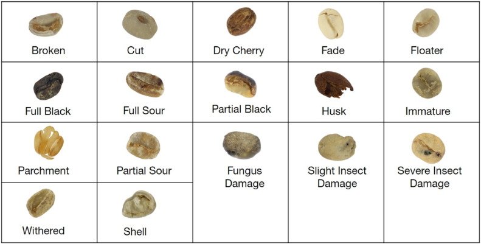</p>
<figcaption>Green coffee defect classes in the dataset - Taken from <span class="citation" data-cites="ARWATCHANANUKUL2024100680">Arwatchananukul et al. (<a href="#ref-ARWATCHANANUKUL2024100680" role="doc-biblioref">2024</a>)</span></figcaption>
</figure>
</div>
</section>
<section id="image-pre-processing-and-loading" class="level2">
<h2 class="anchored" data-anchor-id="image-pre-processing-and-loading">Image Pre-processing and Loading</h2>
<p>For the image pre-processing, first we start by unzipping the raw data files from <code>inst/data_raw.zip</code> to <code>data_raw</code>. Then we create a 80/20 train/test split of the files in a new directory ‘data’. The information on the train/test split is stored in the <code>data\training_labels.csv</code> and <code>data\testing_labels.csv</code> files. Finally, we output a count of all files in the original dataset for each defect class as well as the counts for all files in the train/test datasets.</p>
<div id="extract-pre-processing" class="cell" data-execution_count="3">
<div class="sourceCode cell-code" id="cb3"><pre class="sourceCode python code-with-copy"><code class="sourceCode python"><span id="cb3-1"><a href="#cb3-1" aria-hidden="true" tabindex="-1"></a><span class="co"># Create path variables</span></span>
<span id="cb3-2"><a href="#cb3-2" aria-hidden="true" tabindex="-1"></a>data_raw_pth <span class="op">=</span> <span class="st">'data_raw'</span></span>
<span id="cb3-3"><a href="#cb3-3" aria-hidden="true" tabindex="-1"></a>data_pth <span class="op">=</span> <span class="st">'data'</span></span>
<span id="cb3-4"><a href="#cb3-4" aria-hidden="true" tabindex="-1"></a>test_path <span class="op">=</span> <span class="st">'data/test'</span></span>
<span id="cb3-5"><a href="#cb3-5" aria-hidden="true" tabindex="-1"></a>train_path <span class="op">=</span> <span class="st">'data/train'</span></span>
<span id="cb3-6"><a href="#cb3-6" aria-hidden="true" tabindex="-1"></a></span>
<span id="cb3-7"><a href="#cb3-7" aria-hidden="true" tabindex="-1"></a><span class="co"># Unzip data_raw.zip</span></span>
<span id="cb3-8"><a href="#cb3-8" aria-hidden="true" tabindex="-1"></a>unzip_data_raw(data_raw_pth)</span>
<span id="cb3-9"><a href="#cb3-9" aria-hidden="true" tabindex="-1"></a></span>
<span id="cb3-10"><a href="#cb3-10" aria-hidden="true" tabindex="-1"></a><span class="co"># Create training_labels.csv</span></span>
<span id="cb3-11"><a href="#cb3-11" aria-hidden="true" tabindex="-1"></a>train_df, test_df <span class="op">=</span> create_training_labels_csv(data_raw_pth, out_path <span class="op">=</span> data_pth)</span>
<span id="cb3-12"><a href="#cb3-12" aria-hidden="true" tabindex="-1"></a></span>
<span id="cb3-13"><a href="#cb3-13" aria-hidden="true" tabindex="-1"></a><span class="co"># Copy files to train</span></span>
<span id="cb3-14"><a href="#cb3-14" aria-hidden="true" tabindex="-1"></a>copy_files_to_label_subdirectories(train_df, train_path)  </span>
<span id="cb3-15"><a href="#cb3-15" aria-hidden="true" tabindex="-1"></a></span>
<span id="cb3-16"><a href="#cb3-16" aria-hidden="true" tabindex="-1"></a><span class="co"># Copy files to test</span></span>
<span id="cb3-17"><a href="#cb3-17" aria-hidden="true" tabindex="-1"></a>copy_files_to_label_subdirectories(test_df, test_path)</span>
<span id="cb3-18"><a href="#cb3-18" aria-hidden="true" tabindex="-1"></a></span>
<span id="cb3-19"><a href="#cb3-19" aria-hidden="true" tabindex="-1"></a><span class="co"># Return counts per directory for all classes/subdirectories</span></span>
<span id="cb3-20"><a href="#cb3-20" aria-hidden="true" tabindex="-1"></a>count_files_per_directory(data_raw_pth)</span>
<span id="cb3-21"><a href="#cb3-21" aria-hidden="true" tabindex="-1"></a>count_files_per_directory(train_path)</span>
<span id="cb3-22"><a href="#cb3-22" aria-hidden="true" tabindex="-1"></a>count_files_per_directory(test_path)</span></code><button title="Copy to Clipboard" class="code-copy-button"><i class="bi"></i></button></pre></div>
<div class="cell-output cell-output-stdout">
<pre><code>Training DataFrame exported to: data\training_labels.csv
Testing DataFrame exported to: data\testing_labels.csv
       Subdirectory Name  Number of Files
0                 Broken               62
1                    Cut               66
2             Dry Cherry               54
3                   Fade               35
4                Floater               48
5             Full Black               41
6              Full Sour               75
7          Fungus Damage               75
8                   Husk               53
9               Immature               78
10             Parchment               54
11         Partial Black               65
12          Partial Sour               50
13  Severe Insect Damage               57
14                 Shell               57
15  Slight Insect Damage               55
16              Withered               54
       Subdirectory Name  Number of Files
0                 Broken               50
1                    Cut               53
2             Dry Cherry               43
3                   Fade               28
4                Floater               38
5             Full Black               33
6              Full Sour               60
7          Fungus Damage               60
8                   Husk               42
9               Immature               62
10             Parchment               43
11         Partial Black               52
12          Partial Sour               40
13  Severe Insect Damage               46
14                 Shell               46
15  Slight Insect Damage               44
16              Withered               43
       Subdirectory Name  Number of Files
0                 Broken               12
1                    Cut               13
2             Dry Cherry               11
3                   Fade                7
4                Floater               10
5             Full Black                8
6              Full Sour               15
7          Fungus Damage               15
8                   Husk               11
9               Immature               16
10             Parchment               11
11         Partial Black               13
12          Partial Sour               10
13  Severe Insect Damage               11
14                 Shell               11
15  Slight Insect Damage               11
16              Withered               11</code></pre>
</div>
</div>
<p>Then we load images and resize them to 256x256 pixels (down from 512x512) to save on memory. Labels are loaded and encoded to integers instead of strings for use in the model. Pixel values from the images are normalized to values between 0 and 1.</p>
<div id="load-images" class="cell" data-execution_count="4">
<div class="sourceCode cell-code" id="cb5"><pre class="sourceCode python code-with-copy"><code class="sourceCode python"><span id="cb5-1"><a href="#cb5-1" aria-hidden="true" tabindex="-1"></a><span class="co"># Define parameters for image loading/resizing</span></span>
<span id="cb5-2"><a href="#cb5-2" aria-hidden="true" tabindex="-1"></a>img_height <span class="op">=</span> <span class="dv">256</span></span>
<span id="cb5-3"><a href="#cb5-3" aria-hidden="true" tabindex="-1"></a>img_width <span class="op">=</span> <span class="dv">256</span></span>
<span id="cb5-4"><a href="#cb5-4" aria-hidden="true" tabindex="-1"></a></span>
<span id="cb5-5"><a href="#cb5-5" aria-hidden="true" tabindex="-1"></a><span class="co"># Load images and create arrays for test and train sets.     </span></span>
<span id="cb5-6"><a href="#cb5-6" aria-hidden="true" tabindex="-1"></a>train_images, train_labels <span class="op">=</span> create_image_and_label_arrays(train_df)          </span>
<span id="cb5-7"><a href="#cb5-7" aria-hidden="true" tabindex="-1"></a>test_images, test_labels <span class="op">=</span> create_image_and_label_arrays(test_df)</span>
<span id="cb5-8"><a href="#cb5-8" aria-hidden="true" tabindex="-1"></a></span>
<span id="cb5-9"><a href="#cb5-9" aria-hidden="true" tabindex="-1"></a><span class="co"># Encode labels from text to integers</span></span>
<span id="cb5-10"><a href="#cb5-10" aria-hidden="true" tabindex="-1"></a>label_enc <span class="op">=</span> preprocessing.LabelEncoder()</span>
<span id="cb5-11"><a href="#cb5-11" aria-hidden="true" tabindex="-1"></a>label_enc.fit(test_labels)</span>
<span id="cb5-12"><a href="#cb5-12" aria-hidden="true" tabindex="-1"></a>test_labels_enc <span class="op">=</span> label_enc.transform(test_labels)</span>
<span id="cb5-13"><a href="#cb5-13" aria-hidden="true" tabindex="-1"></a>label_enc.fit(train_labels)</span>
<span id="cb5-14"><a href="#cb5-14" aria-hidden="true" tabindex="-1"></a>train_labels_enc <span class="op">=</span> label_enc.transform(train_labels)</span>
<span id="cb5-15"><a href="#cb5-15" aria-hidden="true" tabindex="-1"></a></span>
<span id="cb5-16"><a href="#cb5-16" aria-hidden="true" tabindex="-1"></a><span class="co"># Normalize pixel values to between 0 and 1</span></span>
<span id="cb5-17"><a href="#cb5-17" aria-hidden="true" tabindex="-1"></a>train_images, test_images <span class="op">=</span> train_images <span class="op">/</span> <span class="fl">255.0</span>, test_images <span class="op">/</span> <span class="fl">255.0</span></span>
<span id="cb5-18"><a href="#cb5-18" aria-hidden="true" tabindex="-1"></a></span>
<span id="cb5-19"><a href="#cb5-19" aria-hidden="true" tabindex="-1"></a><span class="co"># Assign test and train datasets to conventional variable names</span></span>
<span id="cb5-20"><a href="#cb5-20" aria-hidden="true" tabindex="-1"></a>X_train, y_train, X_test, y_test <span class="op">=</span> train_images, train_labels_enc, test_images, test_labels_enc</span>
<span id="cb5-21"><a href="#cb5-21" aria-hidden="true" tabindex="-1"></a>y_true <span class="op">=</span> test_labels</span></code><button title="Copy to Clipboard" class="code-copy-button"><i class="bi"></i></button></pre></div>
</div>
<p>After loading the images we test by plotting a random image with its label to be sure that we have loaded the images and labels correctly.</p>
<div id="cell-randimg-check" class="cell" data-execution_count="5">
<div class="sourceCode cell-code" id="cb6"><pre class="sourceCode python code-with-copy"><code class="sourceCode python"><span id="cb6-1"><a href="#cb6-1" aria-hidden="true" tabindex="-1"></a><span class="co"># Check a random image to make sure that loading has worked correctly </span></span>
<span id="cb6-2"><a href="#cb6-2" aria-hidden="true" tabindex="-1"></a>n <span class="op">=</span> np.random.randint(<span class="dv">0</span>, X_test.shape[<span class="dv">0</span>])</span>
<span id="cb6-3"><a href="#cb6-3" aria-hidden="true" tabindex="-1"></a>img <span class="op">=</span> X_test[n]</span>
<span id="cb6-4"><a href="#cb6-4" aria-hidden="true" tabindex="-1"></a>plt.imshow(img)</span>
<span id="cb6-5"><a href="#cb6-5" aria-hidden="true" tabindex="-1"></a><span class="bu">print</span>(<span class="st">"The label for this image is: "</span>, test_labels[n])</span></code><button title="Copy to Clipboard" class="code-copy-button"><i class="bi"></i></button></pre></div>
<div class="cell-output cell-output-stdout">
<pre><code>The label for this image is:  Withered</code></pre>
</div>
<div class="cell-output cell-output-display">
<div id="randimg-check" class="quarto-figure quarto-figure-center anchored">
<figure class="figure">
<p>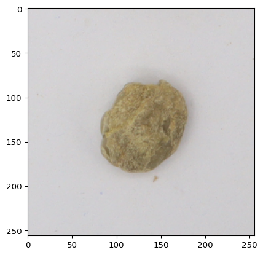</p>
<figcaption>Random Image with Label to check loading</figcaption>
</figure>
</div>
</div>
</div>
</section>
<section id="high-level-feature-extraction-using-a-pre-trained-model" class="level2">
<h2 class="anchored" data-anchor-id="high-level-feature-extraction-using-a-pre-trained-model">High Level Feature Extraction using a Pre-trained model</h2>
<p>To conduct image analysis on the coffee dataset, I chose to use a pre-trained convolution neural network to extract high level features for training KNN, Random Forest, and XGBoost classifier models. I used a <a href="https://keras.io/api/applications/vgg/">VGG16 model</a> with pre-trained weights from <a href="https://www.image-net.org/">ImageNet</a> available through the <a href="https://keras.io">Keras API</a>. I load a pre-trained VGG16 model that is non-trainable to work only using the pre-trained weights.</p>
<div id="setup-pretrained-featext" class="cell" data-execution_count="6">
<div class="sourceCode cell-code" id="cb8"><pre class="sourceCode python code-with-copy"><code class="sourceCode python"><span id="cb8-1"><a href="#cb8-1" aria-hidden="true" tabindex="-1"></a><span class="co"># Setup pretrained model using imagenet weights</span></span>
<span id="cb8-2"><a href="#cb8-2" aria-hidden="true" tabindex="-1"></a><span class="co"># Load pretrained model without classifier/fully connected layers</span></span>
<span id="cb8-3"><a href="#cb8-3" aria-hidden="true" tabindex="-1"></a>vgg_mdl <span class="op">=</span> VGG16(weights<span class="op">=</span><span class="st">'imagenet'</span>, </span>
<span id="cb8-4"><a href="#cb8-4" aria-hidden="true" tabindex="-1"></a>include_top<span class="op">=</span><span class="va">False</span>, </span>
<span id="cb8-5"><a href="#cb8-5" aria-hidden="true" tabindex="-1"></a>input_shape<span class="op">=</span>(img_height, img_width, <span class="dv">3</span>))</span>
<span id="cb8-6"><a href="#cb8-6" aria-hidden="true" tabindex="-1"></a></span>
<span id="cb8-7"><a href="#cb8-7" aria-hidden="true" tabindex="-1"></a><span class="co"># Make the loaded layers non-trainable to ensure we work only with pre-trained weights</span></span>
<span id="cb8-8"><a href="#cb8-8" aria-hidden="true" tabindex="-1"></a><span class="cf">for</span> layer <span class="kw">in</span> vgg_mdl.layers:</span>
<span id="cb8-9"><a href="#cb8-9" aria-hidden="true" tabindex="-1"></a>    layer.trainable <span class="op">=</span> <span class="va">False</span></span>
<span id="cb8-10"><a href="#cb8-10" aria-hidden="true" tabindex="-1"></a></span>
<span id="cb8-11"><a href="#cb8-11" aria-hidden="true" tabindex="-1"></a>vgg_mdl.summary()  <span class="co"># Trainable parameters will be 0</span></span></code><button title="Copy to Clipboard" class="code-copy-button"><i class="bi"></i></button></pre></div>
<div id="setup-pretrained-featext-1" class="cell-output cell-output-display">
<pre style="white-space:pre;overflow-x:auto;line-height:normal;font-family:Menlo,'DejaVu Sans Mono',consolas,'Courier New',monospace"><span style="font-weight: bold">Model: "vgg16"</span>
</pre>
</div>
<div id="setup-pretrained-featext-2" class="cell-output cell-output-display">
<pre style="white-space:pre;overflow-x:auto;line-height:normal;font-family:Menlo,'DejaVu Sans Mono',consolas,'Courier New',monospace">┏━━━━━━━━━━━━━━━━━━━━━━━━━━━━━━━━━┳━━━━━━━━━━━━━━━━━━━━━━━━┳━━━━━━━━━━━━━━━┓
┃<span style="font-weight: bold"> Layer (type)                    </span>┃<span style="font-weight: bold"> Output Shape           </span>┃<span style="font-weight: bold">       Param # </span>┃
┡━━━━━━━━━━━━━━━━━━━━━━━━━━━━━━━━━╇━━━━━━━━━━━━━━━━━━━━━━━━╇━━━━━━━━━━━━━━━┩
│ input_layer (<span style="color: #0087ff; text-decoration-color: #0087ff">InputLayer</span>)        │ (<span style="color: #00d7ff; text-decoration-color: #00d7ff">None</span>, <span style="color: #00af00; text-decoration-color: #00af00">256</span>, <span style="color: #00af00; text-decoration-color: #00af00">256</span>, <span style="color: #00af00; text-decoration-color: #00af00">3</span>)    │             <span style="color: #00af00; text-decoration-color: #00af00">0</span> │
├─────────────────────────────────┼────────────────────────┼───────────────┤
│ block1_conv1 (<span style="color: #0087ff; text-decoration-color: #0087ff">Conv2D</span>)           │ (<span style="color: #00d7ff; text-decoration-color: #00d7ff">None</span>, <span style="color: #00af00; text-decoration-color: #00af00">256</span>, <span style="color: #00af00; text-decoration-color: #00af00">256</span>, <span style="color: #00af00; text-decoration-color: #00af00">64</span>)   │         <span style="color: #00af00; text-decoration-color: #00af00">1,792</span> │
├─────────────────────────────────┼────────────────────────┼───────────────┤
│ block1_conv2 (<span style="color: #0087ff; text-decoration-color: #0087ff">Conv2D</span>)           │ (<span style="color: #00d7ff; text-decoration-color: #00d7ff">None</span>, <span style="color: #00af00; text-decoration-color: #00af00">256</span>, <span style="color: #00af00; text-decoration-color: #00af00">256</span>, <span style="color: #00af00; text-decoration-color: #00af00">64</span>)   │        <span style="color: #00af00; text-decoration-color: #00af00">36,928</span> │
├─────────────────────────────────┼────────────────────────┼───────────────┤
│ block1_pool (<span style="color: #0087ff; text-decoration-color: #0087ff">MaxPooling2D</span>)      │ (<span style="color: #00d7ff; text-decoration-color: #00d7ff">None</span>, <span style="color: #00af00; text-decoration-color: #00af00">128</span>, <span style="color: #00af00; text-decoration-color: #00af00">128</span>, <span style="color: #00af00; text-decoration-color: #00af00">64</span>)   │             <span style="color: #00af00; text-decoration-color: #00af00">0</span> │
├─────────────────────────────────┼────────────────────────┼───────────────┤
│ block2_conv1 (<span style="color: #0087ff; text-decoration-color: #0087ff">Conv2D</span>)           │ (<span style="color: #00d7ff; text-decoration-color: #00d7ff">None</span>, <span style="color: #00af00; text-decoration-color: #00af00">128</span>, <span style="color: #00af00; text-decoration-color: #00af00">128</span>, <span style="color: #00af00; text-decoration-color: #00af00">128</span>)  │        <span style="color: #00af00; text-decoration-color: #00af00">73,856</span> │
├─────────────────────────────────┼────────────────────────┼───────────────┤
│ block2_conv2 (<span style="color: #0087ff; text-decoration-color: #0087ff">Conv2D</span>)           │ (<span style="color: #00d7ff; text-decoration-color: #00d7ff">None</span>, <span style="color: #00af00; text-decoration-color: #00af00">128</span>, <span style="color: #00af00; text-decoration-color: #00af00">128</span>, <span style="color: #00af00; text-decoration-color: #00af00">128</span>)  │       <span style="color: #00af00; text-decoration-color: #00af00">147,584</span> │
├─────────────────────────────────┼────────────────────────┼───────────────┤
│ block2_pool (<span style="color: #0087ff; text-decoration-color: #0087ff">MaxPooling2D</span>)      │ (<span style="color: #00d7ff; text-decoration-color: #00d7ff">None</span>, <span style="color: #00af00; text-decoration-color: #00af00">64</span>, <span style="color: #00af00; text-decoration-color: #00af00">64</span>, <span style="color: #00af00; text-decoration-color: #00af00">128</span>)    │             <span style="color: #00af00; text-decoration-color: #00af00">0</span> │
├─────────────────────────────────┼────────────────────────┼───────────────┤
│ block3_conv1 (<span style="color: #0087ff; text-decoration-color: #0087ff">Conv2D</span>)           │ (<span style="color: #00d7ff; text-decoration-color: #00d7ff">None</span>, <span style="color: #00af00; text-decoration-color: #00af00">64</span>, <span style="color: #00af00; text-decoration-color: #00af00">64</span>, <span style="color: #00af00; text-decoration-color: #00af00">256</span>)    │       <span style="color: #00af00; text-decoration-color: #00af00">295,168</span> │
├─────────────────────────────────┼────────────────────────┼───────────────┤
│ block3_conv2 (<span style="color: #0087ff; text-decoration-color: #0087ff">Conv2D</span>)           │ (<span style="color: #00d7ff; text-decoration-color: #00d7ff">None</span>, <span style="color: #00af00; text-decoration-color: #00af00">64</span>, <span style="color: #00af00; text-decoration-color: #00af00">64</span>, <span style="color: #00af00; text-decoration-color: #00af00">256</span>)    │       <span style="color: #00af00; text-decoration-color: #00af00">590,080</span> │
├─────────────────────────────────┼────────────────────────┼───────────────┤
│ block3_conv3 (<span style="color: #0087ff; text-decoration-color: #0087ff">Conv2D</span>)           │ (<span style="color: #00d7ff; text-decoration-color: #00d7ff">None</span>, <span style="color: #00af00; text-decoration-color: #00af00">64</span>, <span style="color: #00af00; text-decoration-color: #00af00">64</span>, <span style="color: #00af00; text-decoration-color: #00af00">256</span>)    │       <span style="color: #00af00; text-decoration-color: #00af00">590,080</span> │
├─────────────────────────────────┼────────────────────────┼───────────────┤
│ block3_pool (<span style="color: #0087ff; text-decoration-color: #0087ff">MaxPooling2D</span>)      │ (<span style="color: #00d7ff; text-decoration-color: #00d7ff">None</span>, <span style="color: #00af00; text-decoration-color: #00af00">32</span>, <span style="color: #00af00; text-decoration-color: #00af00">32</span>, <span style="color: #00af00; text-decoration-color: #00af00">256</span>)    │             <span style="color: #00af00; text-decoration-color: #00af00">0</span> │
├─────────────────────────────────┼────────────────────────┼───────────────┤
│ block4_conv1 (<span style="color: #0087ff; text-decoration-color: #0087ff">Conv2D</span>)           │ (<span style="color: #00d7ff; text-decoration-color: #00d7ff">None</span>, <span style="color: #00af00; text-decoration-color: #00af00">32</span>, <span style="color: #00af00; text-decoration-color: #00af00">32</span>, <span style="color: #00af00; text-decoration-color: #00af00">512</span>)    │     <span style="color: #00af00; text-decoration-color: #00af00">1,180,160</span> │
├─────────────────────────────────┼────────────────────────┼───────────────┤
│ block4_conv2 (<span style="color: #0087ff; text-decoration-color: #0087ff">Conv2D</span>)           │ (<span style="color: #00d7ff; text-decoration-color: #00d7ff">None</span>, <span style="color: #00af00; text-decoration-color: #00af00">32</span>, <span style="color: #00af00; text-decoration-color: #00af00">32</span>, <span style="color: #00af00; text-decoration-color: #00af00">512</span>)    │     <span style="color: #00af00; text-decoration-color: #00af00">2,359,808</span> │
├─────────────────────────────────┼────────────────────────┼───────────────┤
│ block4_conv3 (<span style="color: #0087ff; text-decoration-color: #0087ff">Conv2D</span>)           │ (<span style="color: #00d7ff; text-decoration-color: #00d7ff">None</span>, <span style="color: #00af00; text-decoration-color: #00af00">32</span>, <span style="color: #00af00; text-decoration-color: #00af00">32</span>, <span style="color: #00af00; text-decoration-color: #00af00">512</span>)    │     <span style="color: #00af00; text-decoration-color: #00af00">2,359,808</span> │
├─────────────────────────────────┼────────────────────────┼───────────────┤
│ block4_pool (<span style="color: #0087ff; text-decoration-color: #0087ff">MaxPooling2D</span>)      │ (<span style="color: #00d7ff; text-decoration-color: #00d7ff">None</span>, <span style="color: #00af00; text-decoration-color: #00af00">16</span>, <span style="color: #00af00; text-decoration-color: #00af00">16</span>, <span style="color: #00af00; text-decoration-color: #00af00">512</span>)    │             <span style="color: #00af00; text-decoration-color: #00af00">0</span> │
├─────────────────────────────────┼────────────────────────┼───────────────┤
│ block5_conv1 (<span style="color: #0087ff; text-decoration-color: #0087ff">Conv2D</span>)           │ (<span style="color: #00d7ff; text-decoration-color: #00d7ff">None</span>, <span style="color: #00af00; text-decoration-color: #00af00">16</span>, <span style="color: #00af00; text-decoration-color: #00af00">16</span>, <span style="color: #00af00; text-decoration-color: #00af00">512</span>)    │     <span style="color: #00af00; text-decoration-color: #00af00">2,359,808</span> │
├─────────────────────────────────┼────────────────────────┼───────────────┤
│ block5_conv2 (<span style="color: #0087ff; text-decoration-color: #0087ff">Conv2D</span>)           │ (<span style="color: #00d7ff; text-decoration-color: #00d7ff">None</span>, <span style="color: #00af00; text-decoration-color: #00af00">16</span>, <span style="color: #00af00; text-decoration-color: #00af00">16</span>, <span style="color: #00af00; text-decoration-color: #00af00">512</span>)    │     <span style="color: #00af00; text-decoration-color: #00af00">2,359,808</span> │
├─────────────────────────────────┼────────────────────────┼───────────────┤
│ block5_conv3 (<span style="color: #0087ff; text-decoration-color: #0087ff">Conv2D</span>)           │ (<span style="color: #00d7ff; text-decoration-color: #00d7ff">None</span>, <span style="color: #00af00; text-decoration-color: #00af00">16</span>, <span style="color: #00af00; text-decoration-color: #00af00">16</span>, <span style="color: #00af00; text-decoration-color: #00af00">512</span>)    │     <span style="color: #00af00; text-decoration-color: #00af00">2,359,808</span> │
├─────────────────────────────────┼────────────────────────┼───────────────┤
│ block5_pool (<span style="color: #0087ff; text-decoration-color: #0087ff">MaxPooling2D</span>)      │ (<span style="color: #00d7ff; text-decoration-color: #00d7ff">None</span>, <span style="color: #00af00; text-decoration-color: #00af00">8</span>, <span style="color: #00af00; text-decoration-color: #00af00">8</span>, <span style="color: #00af00; text-decoration-color: #00af00">512</span>)      │             <span style="color: #00af00; text-decoration-color: #00af00">0</span> │
└─────────────────────────────────┴────────────────────────┴───────────────┘
</pre>
</div>
<div id="setup-pretrained-featext-3" class="cell-output cell-output-display">
<pre style="white-space:pre;overflow-x:auto;line-height:normal;font-family:Menlo,'DejaVu Sans Mono',consolas,'Courier New',monospace"><span style="font-weight: bold"> Total params: </span><span style="color: #00af00; text-decoration-color: #00af00">14,714,688</span> (56.13 MB)
</pre>
</div>
<div id="setup-pretrained-featext-4" class="cell-output cell-output-display">
<pre style="white-space:pre;overflow-x:auto;line-height:normal;font-family:Menlo,'DejaVu Sans Mono',consolas,'Courier New',monospace"><span style="font-weight: bold"> Trainable params: </span><span style="color: #00af00; text-decoration-color: #00af00">0</span> (0.00 B)
</pre>
</div>
<div id="setup-pretrained-featext-5" class="cell-output cell-output-display">
<pre style="white-space:pre;overflow-x:auto;line-height:normal;font-family:Menlo,'DejaVu Sans Mono',consolas,'Courier New',monospace"><span style="font-weight: bold"> Non-trainable params: </span><span style="color: #00af00; text-decoration-color: #00af00">14,714,688</span> (56.13 MB)
</pre>
</div>
</div>
<p>Once the VGG16 model has been loaded, we can use it as a feature extractor to create our <code>classifier_X_train</code> and <code>classifier_X_test</code> datasets that will be used to train the classification models.</p>
<div id="extract-train-features" class="cell" data-execution_count="7">
<div class="sourceCode cell-code" id="cb9"><pre class="sourceCode python code-with-copy"><code class="sourceCode python"><span id="cb9-1"><a href="#cb9-1" aria-hidden="true" tabindex="-1"></a><span class="co"># Extract features from pretrained CNN on training set</span></span>
<span id="cb9-2"><a href="#cb9-2" aria-hidden="true" tabindex="-1"></a>extracted_features <span class="op">=</span> vgg_mdl.predict(X_train)</span>
<span id="cb9-3"><a href="#cb9-3" aria-hidden="true" tabindex="-1"></a></span>
<span id="cb9-4"><a href="#cb9-4" aria-hidden="true" tabindex="-1"></a><span class="co"># Reshape to create X_train for the classifier (KNN, RF, GradientBoosting)</span></span>
<span id="cb9-5"><a href="#cb9-5" aria-hidden="true" tabindex="-1"></a>classifier_X_train <span class="op">=</span> extracted_features.reshape(extracted_features.shape[<span class="dv">0</span>], <span class="op">-</span><span class="dv">1</span>)</span></code><button title="Copy to Clipboard" class="code-copy-button"><i class="bi"></i></button></pre></div>
<div class="cell-output cell-output-stdout">
<div class="ansi-escaped-output">
<pre><span class="ansi-bold"> 1/25</span> <span class="ansi-white-fg">━━━━━━━━━━━━━━━━━━━━</span> <span class="ansi-bold">2:28</span> 6s/step

<span class="ansi-bold"> 2/25</span> <span class="ansi-green-fg">━</span><span class="ansi-white-fg">━━━━━━━━━━━━━━━━━━━</span> <span class="ansi-bold">1:56</span> 5s/step

<span class="ansi-bold"> 3/25</span> <span class="ansi-green-fg">━━</span><span class="ansi-white-fg">━━━━━━━━━━━━━━━━━━</span> <span class="ansi-bold">1:47</span> 5s/step

<span class="ansi-bold"> 4/25</span> <span class="ansi-green-fg">━━━</span><span class="ansi-white-fg">━━━━━━━━━━━━━━━━━</span> <span class="ansi-bold">1:41</span> 5s/step

<span class="ansi-bold"> 5/25</span> <span class="ansi-green-fg">━━━━</span><span class="ansi-white-fg">━━━━━━━━━━━━━━━━</span> <span class="ansi-bold">1:34</span> 5s/step

<span class="ansi-bold"> 6/25</span> <span class="ansi-green-fg">━━━━</span><span class="ansi-white-fg">━━━━━━━━━━━━━━━━</span> <span class="ansi-bold">1:29</span> 5s/step

<span class="ansi-bold"> 7/25</span> <span class="ansi-green-fg">━━━━━</span><span class="ansi-white-fg">━━━━━━━━━━━━━━━</span> <span class="ansi-bold">1:24</span> 5s/step

<span class="ansi-bold"> 8/25</span> <span class="ansi-green-fg">━━━━━━</span><span class="ansi-white-fg">━━━━━━━━━━━━━━</span> <span class="ansi-bold">1:19</span> 5s/step

<span class="ansi-bold"> 9/25</span> <span class="ansi-green-fg">━━━━━━━</span><span class="ansi-white-fg">━━━━━━━━━━━━━</span> <span class="ansi-bold">1:14</span> 5s/step

<span class="ansi-bold">10/25</span> <span class="ansi-green-fg">━━━━━━━━</span><span class="ansi-white-fg">━━━━━━━━━━━━</span> <span class="ansi-bold">1:09</span> 5s/step

<span class="ansi-bold">11/25</span> <span class="ansi-green-fg">━━━━━━━━</span><span class="ansi-white-fg">━━━━━━━━━━━━</span> <span class="ansi-bold">1:05</span> 5s/step

<span class="ansi-bold">12/25</span> <span class="ansi-green-fg">━━━━━━━━━</span><span class="ansi-white-fg">━━━━━━━━━━━</span> <span class="ansi-bold">1:00</span> 5s/step

<span class="ansi-bold">13/25</span> <span class="ansi-green-fg">━━━━━━━━━━</span><span class="ansi-white-fg">━━━━━━━━━━</span> <span class="ansi-bold">55s</span> 5s/step 

<span class="ansi-bold">14/25</span> <span class="ansi-green-fg">━━━━━━━━━━━</span><span class="ansi-white-fg">━━━━━━━━━</span> <span class="ansi-bold">51s</span> 5s/step

<span class="ansi-bold">15/25</span> <span class="ansi-green-fg">━━━━━━━━━━━━</span><span class="ansi-white-fg">━━━━━━━━</span> <span class="ansi-bold">46s</span> 5s/step

<span class="ansi-bold">16/25</span> <span class="ansi-green-fg">━━━━━━━━━━━━</span><span class="ansi-white-fg">━━━━━━━━</span> <span class="ansi-bold">42s</span> 5s/step

<span class="ansi-bold">17/25</span> <span class="ansi-green-fg">━━━━━━━━━━━━━</span><span class="ansi-white-fg">━━━━━━━</span> <span class="ansi-bold">37s</span> 5s/step

<span class="ansi-bold">18/25</span> <span class="ansi-green-fg">━━━━━━━━━━━━━━</span><span class="ansi-white-fg">━━━━━━</span> <span class="ansi-bold">32s</span> 5s/step

<span class="ansi-bold">19/25</span> <span class="ansi-green-fg">━━━━━━━━━━━━━━━</span><span class="ansi-white-fg">━━━━━</span> <span class="ansi-bold">28s</span> 5s/step

<span class="ansi-bold">20/25</span> <span class="ansi-green-fg">━━━━━━━━━━━━━━━━</span><span class="ansi-white-fg">━━━━</span> <span class="ansi-bold">23s</span> 5s/step

<span class="ansi-bold">21/25</span> <span class="ansi-green-fg">━━━━━━━━━━━━━━━━</span><span class="ansi-white-fg">━━━━</span> <span class="ansi-bold">18s</span> 5s/step

<span class="ansi-bold">22/25</span> <span class="ansi-green-fg">━━━━━━━━━━━━━━━━━</span><span class="ansi-white-fg">━━━</span> <span class="ansi-bold">14s</span> 5s/step

<span class="ansi-bold">23/25</span> <span class="ansi-green-fg">━━━━━━━━━━━━━━━━━━</span><span class="ansi-white-fg">━━</span> <span class="ansi-bold">9s</span> 5s/step 

<span class="ansi-bold">24/25</span> <span class="ansi-green-fg">━━━━━━━━━━━━━━━━━━━</span><span class="ansi-white-fg">━</span> <span class="ansi-bold">4s</span> 5s/step

<span class="ansi-bold">25/25</span> <span class="ansi-green-fg">━━━━━━━━━━━━━━━━━━━━</span> <span class="ansi-bold">0s</span> 5s/step

<span class="ansi-bold">25/25</span> <span class="ansi-green-fg">━━━━━━━━━━━━━━━━━━━━</span> <span class="ansi-bold">116s</span> 5s/step
</pre>
</div>
</div>
</div>
<div id="extract-test-features" class="cell" data-execution_count="8">
<div class="sourceCode cell-code" id="cb10"><pre class="sourceCode python code-with-copy"><code class="sourceCode python"><span id="cb10-1"><a href="#cb10-1" aria-hidden="true" tabindex="-1"></a><span class="co">### Extract features from pretrained CNN on test set</span></span>
<span id="cb10-2"><a href="#cb10-2" aria-hidden="true" tabindex="-1"></a>extracted_test_features <span class="op">=</span> vgg_mdl.predict(X_test)</span>
<span id="cb10-3"><a href="#cb10-3" aria-hidden="true" tabindex="-1"></a></span>
<span id="cb10-4"><a href="#cb10-4" aria-hidden="true" tabindex="-1"></a><span class="co"># Reshape to create X_test for the classifier (KNN, RF, GradientBoosting)</span></span>
<span id="cb10-5"><a href="#cb10-5" aria-hidden="true" tabindex="-1"></a>classifier_X_test <span class="op">=</span> extracted_test_features.reshape(extracted_test_features.shape[<span class="dv">0</span>], <span class="op">-</span><span class="dv">1</span>)</span></code><button title="Copy to Clipboard" class="code-copy-button"><i class="bi"></i></button></pre></div>
<div class="cell-output cell-output-stdout">
<div class="ansi-escaped-output">
<pre><span class="ansi-bold">1/7</span> <span class="ansi-green-fg">━━</span><span class="ansi-white-fg">━━━━━━━━━━━━━━━━━━</span> <span class="ansi-bold">30s</span> 5s/step

<span class="ansi-bold">2/7</span> <span class="ansi-green-fg">━━━━━</span><span class="ansi-white-fg">━━━━━━━━━━━━━━━</span> <span class="ansi-bold">23s</span> 5s/step

<span class="ansi-bold">3/7</span> <span class="ansi-green-fg">━━━━━━━━</span><span class="ansi-white-fg">━━━━━━━━━━━━</span> <span class="ansi-bold">18s</span> 5s/step

<span class="ansi-bold">4/7</span> <span class="ansi-green-fg">━━━━━━━━━━━</span><span class="ansi-white-fg">━━━━━━━━━</span> <span class="ansi-bold">13s</span> 5s/step

<span class="ansi-bold">5/7</span> <span class="ansi-green-fg">━━━━━━━━━━━━━━</span><span class="ansi-white-fg">━━━━━━</span> <span class="ansi-bold">9s</span> 5s/step 

<span class="ansi-bold">6/7</span> <span class="ansi-green-fg">━━━━━━━━━━━━━━━━━</span><span class="ansi-white-fg">━━━</span> <span class="ansi-bold">4s</span> 5s/step

<span class="ansi-bold">7/7</span> <span class="ansi-green-fg">━━━━━━━━━━━━━━━━━━━━</span> <span class="ansi-bold">0s</span> 4s/step

<span class="ansi-bold">7/7</span> <span class="ansi-green-fg">━━━━━━━━━━━━━━━━━━━━</span> <span class="ansi-bold">30s</span> 4s/step
</pre>
</div>
</div>
</div>
</section>
<section id="training-classification-models" class="level2">
<h2 class="anchored" data-anchor-id="training-classification-models">Training Classification Models</h2>
<p>Now that the features have been extracted using the VGG16 pre-trained model and the data reshaped to create the <code>classifier_X_train</code> and <code>classifier_X_test</code> datasets, we can start to train and optimise our classification models.</p>
<section id="k-nearest-neighbours-classifier" class="level3">
<h3 class="anchored" data-anchor-id="k-nearest-neighbours-classifier">K-Nearest Neighbours Classifier</h3>
<p>I start by training a KNN classifier and optimise the number of neighbours screening values between 1 and 30 using 5 fold cross validation and accuracy as a metric. This is done using the code shown below (I will spare you the computational effort to run it).</p>
<div id="optimise-knn_model" class="cell" data-execution_count="9">
<div class="sourceCode cell-code" id="cb11"><pre class="sourceCode python code-with-copy"><code class="sourceCode python"><span id="cb11-1"><a href="#cb11-1" aria-hidden="true" tabindex="-1"></a><span class="co"># Train KNN Model and optimise n_neighbors using cross_val_score</span></span>
<span id="cb11-2"><a href="#cb11-2" aria-hidden="true" tabindex="-1"></a>k_values <span class="op">=</span> np.arange(<span class="dv">1</span>, <span class="dv">31</span>)</span>
<span id="cb11-3"><a href="#cb11-3" aria-hidden="true" tabindex="-1"></a>scores <span class="op">=</span> []</span>
<span id="cb11-4"><a href="#cb11-4" aria-hidden="true" tabindex="-1"></a></span>
<span id="cb11-5"><a href="#cb11-5" aria-hidden="true" tabindex="-1"></a><span class="cf">for</span> k <span class="kw">in</span> k_values:</span>
<span id="cb11-6"><a href="#cb11-6" aria-hidden="true" tabindex="-1"></a>    knn <span class="op">=</span> KNeighborsClassifier(n_neighbors<span class="op">=</span>k)</span>
<span id="cb11-7"><a href="#cb11-7" aria-hidden="true" tabindex="-1"></a>    score <span class="op">=</span> cross_val_score(knn, classifier_X_train, y_train, cv<span class="op">=</span><span class="dv">5</span>, scoring <span class="op">=</span> <span class="st">'accuracy'</span>)</span>
<span id="cb11-8"><a href="#cb11-8" aria-hidden="true" tabindex="-1"></a>    scores.append(np.mean(score))</span>
<span id="cb11-9"><a href="#cb11-9" aria-hidden="true" tabindex="-1"></a></span>
<span id="cb11-10"><a href="#cb11-10" aria-hidden="true" tabindex="-1"></a><span class="co"># Plot Accuracy vs k Neighbours</span></span>
<span id="cb11-11"><a href="#cb11-11" aria-hidden="true" tabindex="-1"></a>plt.plot(k_values, scores)  </span>
<span id="cb11-12"><a href="#cb11-12" aria-hidden="true" tabindex="-1"></a>plt.xlabel(<span class="st">'k neighbours'</span>)</span>
<span id="cb11-13"><a href="#cb11-13" aria-hidden="true" tabindex="-1"></a>plt.ylabel(<span class="st">'Accuracy score'</span>)  </span>
<span id="cb11-14"><a href="#cb11-14" aria-hidden="true" tabindex="-1"></a>plt.title(<span class="st">'Accuracy score vs k neighbours for KNN Model'</span>) </span>
<span id="cb11-15"><a href="#cb11-15" aria-hidden="true" tabindex="-1"></a>plt.show()</span></code><button title="Copy to Clipboard" class="code-copy-button"><i class="bi"></i></button></pre></div>
</div>
<div class="quarto-figure quarto-figure-center">
<figure class="figure">
<p>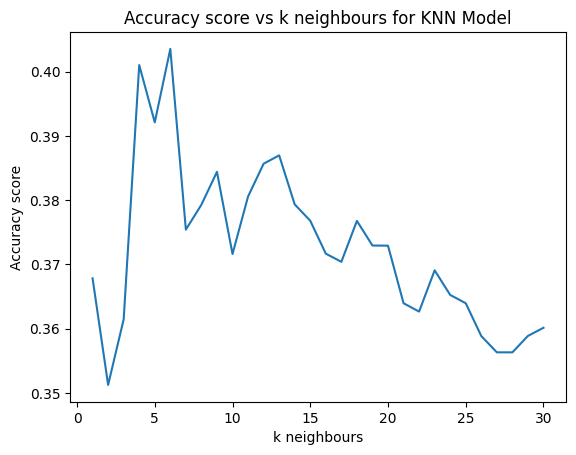</p>
<figcaption>KNN Accuracy vs.&nbsp;k_neighbours</figcaption>
</figure>
</div>
<p>The resulting plot shows that the highest accuracy achieved during the cross validation is with a k of 6. So we use 6 as the number of neighbors for the final model.</p>
<div id="cell-train-knn_model" class="cell" data-execution_count="10">
<div class="sourceCode cell-code" id="cb12"><pre class="sourceCode python code-with-copy"><code class="sourceCode python"><span id="cb12-1"><a href="#cb12-1" aria-hidden="true" tabindex="-1"></a><span class="co"># Train optimized KNN model</span></span>
<span id="cb12-2"><a href="#cb12-2" aria-hidden="true" tabindex="-1"></a>knn_model <span class="op">=</span> KNeighborsClassifier(n_neighbors <span class="op">=</span> <span class="dv">6</span>)</span>
<span id="cb12-3"><a href="#cb12-3" aria-hidden="true" tabindex="-1"></a>knn_model.fit(classifier_X_train, y_train)</span></code><button title="Copy to Clipboard" class="code-copy-button"><i class="bi"></i></button></pre></div>
<div id="train-knn_model" class="cell-output cell-output-display" data-execution_count="9">
<style>#sk-container-id-1 {
  /* Definition of color scheme common for light and dark mode */
  --sklearn-color-text: #000;
  --sklearn-color-text-muted: #666;
  --sklearn-color-line: gray;
  /* Definition of color scheme for unfitted estimators */
  --sklearn-color-unfitted-level-0: #fff5e6;
  --sklearn-color-unfitted-level-1: #f6e4d2;
  --sklearn-color-unfitted-level-2: #ffe0b3;
  --sklearn-color-unfitted-level-3: chocolate;
  /* Definition of color scheme for fitted estimators */
  --sklearn-color-fitted-level-0: #f0f8ff;
  --sklearn-color-fitted-level-1: #d4ebff;
  --sklearn-color-fitted-level-2: #b3dbfd;
  --sklearn-color-fitted-level-3: cornflowerblue;

  /* Specific color for light theme */
  --sklearn-color-text-on-default-background: var(--sg-text-color, var(--theme-code-foreground, var(--jp-content-font-color1, black)));
  --sklearn-color-background: var(--sg-background-color, var(--theme-background, var(--jp-layout-color0, white)));
  --sklearn-color-border-box: var(--sg-text-color, var(--theme-code-foreground, var(--jp-content-font-color1, black)));
  --sklearn-color-icon: #696969;

  @media (prefers-color-scheme: dark) {
    /* Redefinition of color scheme for dark theme */
    --sklearn-color-text-on-default-background: var(--sg-text-color, var(--theme-code-foreground, var(--jp-content-font-color1, white)));
    --sklearn-color-background: var(--sg-background-color, var(--theme-background, var(--jp-layout-color0, #111)));
    --sklearn-color-border-box: var(--sg-text-color, var(--theme-code-foreground, var(--jp-content-font-color1, white)));
    --sklearn-color-icon: #878787;
  }
}

#sk-container-id-1 {
  color: var(--sklearn-color-text);
}

#sk-container-id-1 pre {
  padding: 0;
}

#sk-container-id-1 input.sk-hidden--visually {
  border: 0;
  clip: rect(1px 1px 1px 1px);
  clip: rect(1px, 1px, 1px, 1px);
  height: 1px;
  margin: -1px;
  overflow: hidden;
  padding: 0;
  position: absolute;
  width: 1px;
}

#sk-container-id-1 div.sk-dashed-wrapped {
  border: 1px dashed var(--sklearn-color-line);
  margin: 0 0.4em 0.5em 0.4em;
  box-sizing: border-box;
  padding-bottom: 0.4em;
  background-color: var(--sklearn-color-background);
}

#sk-container-id-1 div.sk-container {
  /* jupyter's `normalize.less` sets `[hidden] { display: none; }`
     but bootstrap.min.css set `[hidden] { display: none !important; }`
     so we also need the `!important` here to be able to override the
     default hidden behavior on the sphinx rendered scikit-learn.org.
     See: https://github.com/scikit-learn/scikit-learn/issues/21755 */
  display: inline-block !important;
  position: relative;
}

#sk-container-id-1 div.sk-text-repr-fallback {
  display: none;
}

div.sk-parallel-item,
div.sk-serial,
div.sk-item {
  /* draw centered vertical line to link estimators */
  background-image: linear-gradient(var(--sklearn-color-text-on-default-background), var(--sklearn-color-text-on-default-background));
  background-size: 2px 100%;
  background-repeat: no-repeat;
  background-position: center center;
}

/* Parallel-specific style estimator block */

#sk-container-id-1 div.sk-parallel-item::after {
  content: "";
  width: 100%;
  border-bottom: 2px solid var(--sklearn-color-text-on-default-background);
  flex-grow: 1;
}

#sk-container-id-1 div.sk-parallel {
  display: flex;
  align-items: stretch;
  justify-content: center;
  background-color: var(--sklearn-color-background);
  position: relative;
}

#sk-container-id-1 div.sk-parallel-item {
  display: flex;
  flex-direction: column;
}

#sk-container-id-1 div.sk-parallel-item:first-child::after {
  align-self: flex-end;
  width: 50%;
}

#sk-container-id-1 div.sk-parallel-item:last-child::after {
  align-self: flex-start;
  width: 50%;
}

#sk-container-id-1 div.sk-parallel-item:only-child::after {
  width: 0;
}

/* Serial-specific style estimator block */

#sk-container-id-1 div.sk-serial {
  display: flex;
  flex-direction: column;
  align-items: center;
  background-color: var(--sklearn-color-background);
  padding-right: 1em;
  padding-left: 1em;
}


/* Toggleable style: style used for estimator/Pipeline/ColumnTransformer box that is
clickable and can be expanded/collapsed.
- Pipeline and ColumnTransformer use this feature and define the default style
- Estimators will overwrite some part of the style using the `sk-estimator` class
*/

/* Pipeline and ColumnTransformer style (default) */

#sk-container-id-1 div.sk-toggleable {
  /* Default theme specific background. It is overwritten whether we have a
  specific estimator or a Pipeline/ColumnTransformer */
  background-color: var(--sklearn-color-background);
}

/* Toggleable label */
#sk-container-id-1 label.sk-toggleable__label {
  cursor: pointer;
  display: flex;
  width: 100%;
  margin-bottom: 0;
  padding: 0.5em;
  box-sizing: border-box;
  text-align: center;
  align-items: start;
  justify-content: space-between;
  gap: 0.5em;
}

#sk-container-id-1 label.sk-toggleable__label .caption {
  font-size: 0.6rem;
  font-weight: lighter;
  color: var(--sklearn-color-text-muted);
}

#sk-container-id-1 label.sk-toggleable__label-arrow:before {
  /* Arrow on the left of the label */
  content: "▸";
  float: left;
  margin-right: 0.25em;
  color: var(--sklearn-color-icon);
}

#sk-container-id-1 label.sk-toggleable__label-arrow:hover:before {
  color: var(--sklearn-color-text);
}

/* Toggleable content - dropdown */

#sk-container-id-1 div.sk-toggleable__content {
  max-height: 0;
  max-width: 0;
  overflow: hidden;
  text-align: left;
  /* unfitted */
  background-color: var(--sklearn-color-unfitted-level-0);
}

#sk-container-id-1 div.sk-toggleable__content.fitted {
  /* fitted */
  background-color: var(--sklearn-color-fitted-level-0);
}

#sk-container-id-1 div.sk-toggleable__content pre {
  margin: 0.2em;
  border-radius: 0.25em;
  color: var(--sklearn-color-text);
  /* unfitted */
  background-color: var(--sklearn-color-unfitted-level-0);
}

#sk-container-id-1 div.sk-toggleable__content.fitted pre {
  /* unfitted */
  background-color: var(--sklearn-color-fitted-level-0);
}

#sk-container-id-1 input.sk-toggleable__control:checked~div.sk-toggleable__content {
  /* Expand drop-down */
  max-height: 200px;
  max-width: 100%;
  overflow: auto;
}

#sk-container-id-1 input.sk-toggleable__control:checked~label.sk-toggleable__label-arrow:before {
  content: "▾";
}

/* Pipeline/ColumnTransformer-specific style */

#sk-container-id-1 div.sk-label input.sk-toggleable__control:checked~label.sk-toggleable__label {
  color: var(--sklearn-color-text);
  background-color: var(--sklearn-color-unfitted-level-2);
}

#sk-container-id-1 div.sk-label.fitted input.sk-toggleable__control:checked~label.sk-toggleable__label {
  background-color: var(--sklearn-color-fitted-level-2);
}

/* Estimator-specific style */

/* Colorize estimator box */
#sk-container-id-1 div.sk-estimator input.sk-toggleable__control:checked~label.sk-toggleable__label {
  /* unfitted */
  background-color: var(--sklearn-color-unfitted-level-2);
}

#sk-container-id-1 div.sk-estimator.fitted input.sk-toggleable__control:checked~label.sk-toggleable__label {
  /* fitted */
  background-color: var(--sklearn-color-fitted-level-2);
}

#sk-container-id-1 div.sk-label label.sk-toggleable__label,
#sk-container-id-1 div.sk-label label {
  /* The background is the default theme color */
  color: var(--sklearn-color-text-on-default-background);
}

/* On hover, darken the color of the background */
#sk-container-id-1 div.sk-label:hover label.sk-toggleable__label {
  color: var(--sklearn-color-text);
  background-color: var(--sklearn-color-unfitted-level-2);
}

/* Label box, darken color on hover, fitted */
#sk-container-id-1 div.sk-label.fitted:hover label.sk-toggleable__label.fitted {
  color: var(--sklearn-color-text);
  background-color: var(--sklearn-color-fitted-level-2);
}

/* Estimator label */

#sk-container-id-1 div.sk-label label {
  font-family: monospace;
  font-weight: bold;
  display: inline-block;
  line-height: 1.2em;
}

#sk-container-id-1 div.sk-label-container {
  text-align: center;
}

/* Estimator-specific */
#sk-container-id-1 div.sk-estimator {
  font-family: monospace;
  border: 1px dotted var(--sklearn-color-border-box);
  border-radius: 0.25em;
  box-sizing: border-box;
  margin-bottom: 0.5em;
  /* unfitted */
  background-color: var(--sklearn-color-unfitted-level-0);
}

#sk-container-id-1 div.sk-estimator.fitted {
  /* fitted */
  background-color: var(--sklearn-color-fitted-level-0);
}

/* on hover */
#sk-container-id-1 div.sk-estimator:hover {
  /* unfitted */
  background-color: var(--sklearn-color-unfitted-level-2);
}

#sk-container-id-1 div.sk-estimator.fitted:hover {
  /* fitted */
  background-color: var(--sklearn-color-fitted-level-2);
}

/* Specification for estimator info (e.g. "i" and "?") */

/* Common style for "i" and "?" */

.sk-estimator-doc-link,
a:link.sk-estimator-doc-link,
a:visited.sk-estimator-doc-link {
  float: right;
  font-size: smaller;
  line-height: 1em;
  font-family: monospace;
  background-color: var(--sklearn-color-background);
  border-radius: 1em;
  height: 1em;
  width: 1em;
  text-decoration: none !important;
  margin-left: 0.5em;
  text-align: center;
  /* unfitted */
  border: var(--sklearn-color-unfitted-level-1) 1pt solid;
  color: var(--sklearn-color-unfitted-level-1);
}

.sk-estimator-doc-link.fitted,
a:link.sk-estimator-doc-link.fitted,
a:visited.sk-estimator-doc-link.fitted {
  /* fitted */
  border: var(--sklearn-color-fitted-level-1) 1pt solid;
  color: var(--sklearn-color-fitted-level-1);
}

/* On hover */
div.sk-estimator:hover .sk-estimator-doc-link:hover,
.sk-estimator-doc-link:hover,
div.sk-label-container:hover .sk-estimator-doc-link:hover,
.sk-estimator-doc-link:hover {
  /* unfitted */
  background-color: var(--sklearn-color-unfitted-level-3);
  color: var(--sklearn-color-background);
  text-decoration: none;
}

div.sk-estimator.fitted:hover .sk-estimator-doc-link.fitted:hover,
.sk-estimator-doc-link.fitted:hover,
div.sk-label-container:hover .sk-estimator-doc-link.fitted:hover,
.sk-estimator-doc-link.fitted:hover {
  /* fitted */
  background-color: var(--sklearn-color-fitted-level-3);
  color: var(--sklearn-color-background);
  text-decoration: none;
}

/* Span, style for the box shown on hovering the info icon */
.sk-estimator-doc-link span {
  display: none;
  z-index: 9999;
  position: relative;
  font-weight: normal;
  right: .2ex;
  padding: .5ex;
  margin: .5ex;
  width: min-content;
  min-width: 20ex;
  max-width: 50ex;
  color: var(--sklearn-color-text);
  box-shadow: 2pt 2pt 4pt #999;
  /* unfitted */
  background: var(--sklearn-color-unfitted-level-0);
  border: .5pt solid var(--sklearn-color-unfitted-level-3);
}

.sk-estimator-doc-link.fitted span {
  /* fitted */
  background: var(--sklearn-color-fitted-level-0);
  border: var(--sklearn-color-fitted-level-3);
}

.sk-estimator-doc-link:hover span {
  display: block;
}

/* "?"-specific style due to the `<a>` HTML tag */

#sk-container-id-1 a.estimator_doc_link {
  float: right;
  font-size: 1rem;
  line-height: 1em;
  font-family: monospace;
  background-color: var(--sklearn-color-background);
  border-radius: 1rem;
  height: 1rem;
  width: 1rem;
  text-decoration: none;
  /* unfitted */
  color: var(--sklearn-color-unfitted-level-1);
  border: var(--sklearn-color-unfitted-level-1) 1pt solid;
}

#sk-container-id-1 a.estimator_doc_link.fitted {
  /* fitted */
  border: var(--sklearn-color-fitted-level-1) 1pt solid;
  color: var(--sklearn-color-fitted-level-1);
}

/* On hover */
#sk-container-id-1 a.estimator_doc_link:hover {
  /* unfitted */
  background-color: var(--sklearn-color-unfitted-level-3);
  color: var(--sklearn-color-background);
  text-decoration: none;
}

#sk-container-id-1 a.estimator_doc_link.fitted:hover {
  /* fitted */
  background-color: var(--sklearn-color-fitted-level-3);
}
</style><div id="sk-container-id-1" class="sk-top-container"><div class="sk-text-repr-fallback"><pre>KNeighborsClassifier(n_neighbors=6)</pre><b>In a Jupyter environment, please rerun this cell to show the HTML representation or trust the notebook. <br>On GitHub, the HTML representation is unable to render, please try loading this page with nbviewer.org.</b></div><div class="sk-container" hidden=""><div class="sk-item"><div class="sk-estimator fitted sk-toggleable"><input class="sk-toggleable__control sk-hidden--visually" id="sk-estimator-id-1" type="checkbox" checked=""><label for="sk-estimator-id-1" class="sk-toggleable__label fitted sk-toggleable__label-arrow"><div><div>KNeighborsClassifier</div></div><div><a class="sk-estimator-doc-link fitted" rel="noreferrer" target="_blank" href="https://scikit-learn.org/1.6/modules/generated/sklearn.neighbors.KNeighborsClassifier.html">?<span>Documentation for KNeighborsClassifier</span></a><span class="sk-estimator-doc-link fitted">i<span>Fitted</span></span></div></label><div class="sk-toggleable__content fitted"><pre>KNeighborsClassifier(n_neighbors=6)</pre></div> </div></div></div></div>
</div>
</div>
</section>
<section id="random-forest-classifier" class="level3">
<h3 class="anchored" data-anchor-id="random-forest-classifier">Random Forest Classifier</h3>
<p>Next we start by training a Random Forest classifier and optimizing on the number of estimators to use. The code used for the optimization is shown below, but I will spare you the computational effort to run it.</p>
<div id="optimise-rf_model" class="cell" data-execution_count="11">
<div class="sourceCode cell-code" id="cb13"><pre class="sourceCode python code-with-copy"><code class="sourceCode python"><span id="cb13-1"><a href="#cb13-1" aria-hidden="true" tabindex="-1"></a><span class="co"># Train Random Forest Model and optimise n_estimators using accuracy score</span></span>
<span id="cb13-2"><a href="#cb13-2" aria-hidden="true" tabindex="-1"></a>n_values <span class="op">=</span> np.arange(<span class="dv">100</span>, <span class="dv">1700</span>, <span class="dv">100</span>)</span>
<span id="cb13-3"><a href="#cb13-3" aria-hidden="true" tabindex="-1"></a>scores <span class="op">=</span> []</span>
<span id="cb13-4"><a href="#cb13-4" aria-hidden="true" tabindex="-1"></a></span>
<span id="cb13-5"><a href="#cb13-5" aria-hidden="true" tabindex="-1"></a><span class="cf">for</span> n <span class="kw">in</span> n_values:</span>
<span id="cb13-6"><a href="#cb13-6" aria-hidden="true" tabindex="-1"></a>    rf <span class="op">=</span> RandomForestClassifier(n_estimators<span class="op">=</span>n, max_depth<span class="op">=</span><span class="dv">60</span>, random_state<span class="op">=</span><span class="dv">42</span>, bootstrap <span class="op">=</span> <span class="va">False</span>)</span>
<span id="cb13-7"><a href="#cb13-7" aria-hidden="true" tabindex="-1"></a>    score <span class="op">=</span> cross_val_score(rf, classifier_X_train, y_train, cv<span class="op">=</span><span class="dv">3</span>, scoring <span class="op">=</span> <span class="st">'accuracy'</span>)</span>
<span id="cb13-8"><a href="#cb13-8" aria-hidden="true" tabindex="-1"></a>    scores.append(np.mean(score))</span>
<span id="cb13-9"><a href="#cb13-9" aria-hidden="true" tabindex="-1"></a></span>
<span id="cb13-10"><a href="#cb13-10" aria-hidden="true" tabindex="-1"></a><span class="co"># Plot Accuracy vs n estimators</span></span>
<span id="cb13-11"><a href="#cb13-11" aria-hidden="true" tabindex="-1"></a>plt.plot(n_values, scores)  </span>
<span id="cb13-12"><a href="#cb13-12" aria-hidden="true" tabindex="-1"></a>plt.xlabel(<span class="st">'n estimators'</span>)</span>
<span id="cb13-13"><a href="#cb13-13" aria-hidden="true" tabindex="-1"></a>plt.ylabel(<span class="st">'Accuracy score'</span>)  </span>
<span id="cb13-14"><a href="#cb13-14" aria-hidden="true" tabindex="-1"></a>plt.title(<span class="st">'Accuracy score vs n estimators for Random Forest Model'</span>) </span>
<span id="cb13-15"><a href="#cb13-15" aria-hidden="true" tabindex="-1"></a>plt.show()</span></code><button title="Copy to Clipboard" class="code-copy-button"><i class="bi"></i></button></pre></div>
</div>
<p>The optimal value for the number of estimators is 400 and achieves the highest accuracy as shown in the plot below. The final model is trained on 400 learners.</p>
<div class="quarto-figure quarto-figure-center">
<figure class="figure">
<p>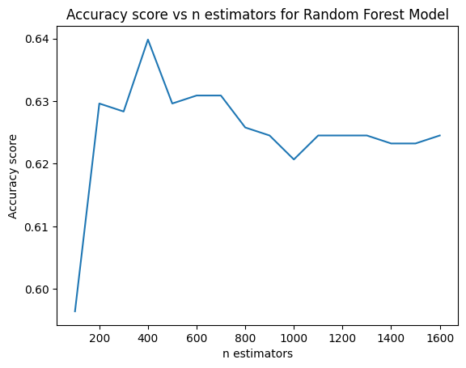</p>
<figcaption>Random Forest Accuracy vs.&nbsp;n_learners</figcaption>
</figure>
</div>
<div id="cell-train-rf_model" class="cell" data-execution_count="12">
<div class="sourceCode cell-code" id="cb14"><pre class="sourceCode python code-with-copy"><code class="sourceCode python"><span id="cb14-1"><a href="#cb14-1" aria-hidden="true" tabindex="-1"></a><span class="co"># Train optimized Random Forest Model</span></span>
<span id="cb14-2"><a href="#cb14-2" aria-hidden="true" tabindex="-1"></a>rf_model <span class="op">=</span> RandomForestClassifier(n_estimators <span class="op">=</span> <span class="dv">400</span>, max_depth<span class="op">=</span><span class="dv">60</span>, random_state<span class="op">=</span><span class="dv">42</span>, bootstrap <span class="op">=</span> <span class="va">False</span>)</span>
<span id="cb14-3"><a href="#cb14-3" aria-hidden="true" tabindex="-1"></a>rf_model.fit(classifier_X_train, y_train)</span>
<span id="cb14-4"><a href="#cb14-4" aria-hidden="true" tabindex="-1"></a>rf_model</span></code><button title="Copy to Clipboard" class="code-copy-button"><i class="bi"></i></button></pre></div>
<div id="train-rf_model" class="cell-output cell-output-display" data-execution_count="10">
<style>#sk-container-id-2 {
  /* Definition of color scheme common for light and dark mode */
  --sklearn-color-text: #000;
  --sklearn-color-text-muted: #666;
  --sklearn-color-line: gray;
  /* Definition of color scheme for unfitted estimators */
  --sklearn-color-unfitted-level-0: #fff5e6;
  --sklearn-color-unfitted-level-1: #f6e4d2;
  --sklearn-color-unfitted-level-2: #ffe0b3;
  --sklearn-color-unfitted-level-3: chocolate;
  /* Definition of color scheme for fitted estimators */
  --sklearn-color-fitted-level-0: #f0f8ff;
  --sklearn-color-fitted-level-1: #d4ebff;
  --sklearn-color-fitted-level-2: #b3dbfd;
  --sklearn-color-fitted-level-3: cornflowerblue;

  /* Specific color for light theme */
  --sklearn-color-text-on-default-background: var(--sg-text-color, var(--theme-code-foreground, var(--jp-content-font-color1, black)));
  --sklearn-color-background: var(--sg-background-color, var(--theme-background, var(--jp-layout-color0, white)));
  --sklearn-color-border-box: var(--sg-text-color, var(--theme-code-foreground, var(--jp-content-font-color1, black)));
  --sklearn-color-icon: #696969;

  @media (prefers-color-scheme: dark) {
    /* Redefinition of color scheme for dark theme */
    --sklearn-color-text-on-default-background: var(--sg-text-color, var(--theme-code-foreground, var(--jp-content-font-color1, white)));
    --sklearn-color-background: var(--sg-background-color, var(--theme-background, var(--jp-layout-color0, #111)));
    --sklearn-color-border-box: var(--sg-text-color, var(--theme-code-foreground, var(--jp-content-font-color1, white)));
    --sklearn-color-icon: #878787;
  }
}

#sk-container-id-2 {
  color: var(--sklearn-color-text);
}

#sk-container-id-2 pre {
  padding: 0;
}

#sk-container-id-2 input.sk-hidden--visually {
  border: 0;
  clip: rect(1px 1px 1px 1px);
  clip: rect(1px, 1px, 1px, 1px);
  height: 1px;
  margin: -1px;
  overflow: hidden;
  padding: 0;
  position: absolute;
  width: 1px;
}

#sk-container-id-2 div.sk-dashed-wrapped {
  border: 1px dashed var(--sklearn-color-line);
  margin: 0 0.4em 0.5em 0.4em;
  box-sizing: border-box;
  padding-bottom: 0.4em;
  background-color: var(--sklearn-color-background);
}

#sk-container-id-2 div.sk-container {
  /* jupyter's `normalize.less` sets `[hidden] { display: none; }`
     but bootstrap.min.css set `[hidden] { display: none !important; }`
     so we also need the `!important` here to be able to override the
     default hidden behavior on the sphinx rendered scikit-learn.org.
     See: https://github.com/scikit-learn/scikit-learn/issues/21755 */
  display: inline-block !important;
  position: relative;
}

#sk-container-id-2 div.sk-text-repr-fallback {
  display: none;
}

div.sk-parallel-item,
div.sk-serial,
div.sk-item {
  /* draw centered vertical line to link estimators */
  background-image: linear-gradient(var(--sklearn-color-text-on-default-background), var(--sklearn-color-text-on-default-background));
  background-size: 2px 100%;
  background-repeat: no-repeat;
  background-position: center center;
}

/* Parallel-specific style estimator block */

#sk-container-id-2 div.sk-parallel-item::after {
  content: "";
  width: 100%;
  border-bottom: 2px solid var(--sklearn-color-text-on-default-background);
  flex-grow: 1;
}

#sk-container-id-2 div.sk-parallel {
  display: flex;
  align-items: stretch;
  justify-content: center;
  background-color: var(--sklearn-color-background);
  position: relative;
}

#sk-container-id-2 div.sk-parallel-item {
  display: flex;
  flex-direction: column;
}

#sk-container-id-2 div.sk-parallel-item:first-child::after {
  align-self: flex-end;
  width: 50%;
}

#sk-container-id-2 div.sk-parallel-item:last-child::after {
  align-self: flex-start;
  width: 50%;
}

#sk-container-id-2 div.sk-parallel-item:only-child::after {
  width: 0;
}

/* Serial-specific style estimator block */

#sk-container-id-2 div.sk-serial {
  display: flex;
  flex-direction: column;
  align-items: center;
  background-color: var(--sklearn-color-background);
  padding-right: 1em;
  padding-left: 1em;
}


/* Toggleable style: style used for estimator/Pipeline/ColumnTransformer box that is
clickable and can be expanded/collapsed.
- Pipeline and ColumnTransformer use this feature and define the default style
- Estimators will overwrite some part of the style using the `sk-estimator` class
*/

/* Pipeline and ColumnTransformer style (default) */

#sk-container-id-2 div.sk-toggleable {
  /* Default theme specific background. It is overwritten whether we have a
  specific estimator or a Pipeline/ColumnTransformer */
  background-color: var(--sklearn-color-background);
}

/* Toggleable label */
#sk-container-id-2 label.sk-toggleable__label {
  cursor: pointer;
  display: flex;
  width: 100%;
  margin-bottom: 0;
  padding: 0.5em;
  box-sizing: border-box;
  text-align: center;
  align-items: start;
  justify-content: space-between;
  gap: 0.5em;
}

#sk-container-id-2 label.sk-toggleable__label .caption {
  font-size: 0.6rem;
  font-weight: lighter;
  color: var(--sklearn-color-text-muted);
}

#sk-container-id-2 label.sk-toggleable__label-arrow:before {
  /* Arrow on the left of the label */
  content: "▸";
  float: left;
  margin-right: 0.25em;
  color: var(--sklearn-color-icon);
}

#sk-container-id-2 label.sk-toggleable__label-arrow:hover:before {
  color: var(--sklearn-color-text);
}

/* Toggleable content - dropdown */

#sk-container-id-2 div.sk-toggleable__content {
  max-height: 0;
  max-width: 0;
  overflow: hidden;
  text-align: left;
  /* unfitted */
  background-color: var(--sklearn-color-unfitted-level-0);
}

#sk-container-id-2 div.sk-toggleable__content.fitted {
  /* fitted */
  background-color: var(--sklearn-color-fitted-level-0);
}

#sk-container-id-2 div.sk-toggleable__content pre {
  margin: 0.2em;
  border-radius: 0.25em;
  color: var(--sklearn-color-text);
  /* unfitted */
  background-color: var(--sklearn-color-unfitted-level-0);
}

#sk-container-id-2 div.sk-toggleable__content.fitted pre {
  /* unfitted */
  background-color: var(--sklearn-color-fitted-level-0);
}

#sk-container-id-2 input.sk-toggleable__control:checked~div.sk-toggleable__content {
  /* Expand drop-down */
  max-height: 200px;
  max-width: 100%;
  overflow: auto;
}

#sk-container-id-2 input.sk-toggleable__control:checked~label.sk-toggleable__label-arrow:before {
  content: "▾";
}

/* Pipeline/ColumnTransformer-specific style */

#sk-container-id-2 div.sk-label input.sk-toggleable__control:checked~label.sk-toggleable__label {
  color: var(--sklearn-color-text);
  background-color: var(--sklearn-color-unfitted-level-2);
}

#sk-container-id-2 div.sk-label.fitted input.sk-toggleable__control:checked~label.sk-toggleable__label {
  background-color: var(--sklearn-color-fitted-level-2);
}

/* Estimator-specific style */

/* Colorize estimator box */
#sk-container-id-2 div.sk-estimator input.sk-toggleable__control:checked~label.sk-toggleable__label {
  /* unfitted */
  background-color: var(--sklearn-color-unfitted-level-2);
}

#sk-container-id-2 div.sk-estimator.fitted input.sk-toggleable__control:checked~label.sk-toggleable__label {
  /* fitted */
  background-color: var(--sklearn-color-fitted-level-2);
}

#sk-container-id-2 div.sk-label label.sk-toggleable__label,
#sk-container-id-2 div.sk-label label {
  /* The background is the default theme color */
  color: var(--sklearn-color-text-on-default-background);
}

/* On hover, darken the color of the background */
#sk-container-id-2 div.sk-label:hover label.sk-toggleable__label {
  color: var(--sklearn-color-text);
  background-color: var(--sklearn-color-unfitted-level-2);
}

/* Label box, darken color on hover, fitted */
#sk-container-id-2 div.sk-label.fitted:hover label.sk-toggleable__label.fitted {
  color: var(--sklearn-color-text);
  background-color: var(--sklearn-color-fitted-level-2);
}

/* Estimator label */

#sk-container-id-2 div.sk-label label {
  font-family: monospace;
  font-weight: bold;
  display: inline-block;
  line-height: 1.2em;
}

#sk-container-id-2 div.sk-label-container {
  text-align: center;
}

/* Estimator-specific */
#sk-container-id-2 div.sk-estimator {
  font-family: monospace;
  border: 1px dotted var(--sklearn-color-border-box);
  border-radius: 0.25em;
  box-sizing: border-box;
  margin-bottom: 0.5em;
  /* unfitted */
  background-color: var(--sklearn-color-unfitted-level-0);
}

#sk-container-id-2 div.sk-estimator.fitted {
  /* fitted */
  background-color: var(--sklearn-color-fitted-level-0);
}

/* on hover */
#sk-container-id-2 div.sk-estimator:hover {
  /* unfitted */
  background-color: var(--sklearn-color-unfitted-level-2);
}

#sk-container-id-2 div.sk-estimator.fitted:hover {
  /* fitted */
  background-color: var(--sklearn-color-fitted-level-2);
}

/* Specification for estimator info (e.g. "i" and "?") */

/* Common style for "i" and "?" */

.sk-estimator-doc-link,
a:link.sk-estimator-doc-link,
a:visited.sk-estimator-doc-link {
  float: right;
  font-size: smaller;
  line-height: 1em;
  font-family: monospace;
  background-color: var(--sklearn-color-background);
  border-radius: 1em;
  height: 1em;
  width: 1em;
  text-decoration: none !important;
  margin-left: 0.5em;
  text-align: center;
  /* unfitted */
  border: var(--sklearn-color-unfitted-level-1) 1pt solid;
  color: var(--sklearn-color-unfitted-level-1);
}

.sk-estimator-doc-link.fitted,
a:link.sk-estimator-doc-link.fitted,
a:visited.sk-estimator-doc-link.fitted {
  /* fitted */
  border: var(--sklearn-color-fitted-level-1) 1pt solid;
  color: var(--sklearn-color-fitted-level-1);
}

/* On hover */
div.sk-estimator:hover .sk-estimator-doc-link:hover,
.sk-estimator-doc-link:hover,
div.sk-label-container:hover .sk-estimator-doc-link:hover,
.sk-estimator-doc-link:hover {
  /* unfitted */
  background-color: var(--sklearn-color-unfitted-level-3);
  color: var(--sklearn-color-background);
  text-decoration: none;
}

div.sk-estimator.fitted:hover .sk-estimator-doc-link.fitted:hover,
.sk-estimator-doc-link.fitted:hover,
div.sk-label-container:hover .sk-estimator-doc-link.fitted:hover,
.sk-estimator-doc-link.fitted:hover {
  /* fitted */
  background-color: var(--sklearn-color-fitted-level-3);
  color: var(--sklearn-color-background);
  text-decoration: none;
}

/* Span, style for the box shown on hovering the info icon */
.sk-estimator-doc-link span {
  display: none;
  z-index: 9999;
  position: relative;
  font-weight: normal;
  right: .2ex;
  padding: .5ex;
  margin: .5ex;
  width: min-content;
  min-width: 20ex;
  max-width: 50ex;
  color: var(--sklearn-color-text);
  box-shadow: 2pt 2pt 4pt #999;
  /* unfitted */
  background: var(--sklearn-color-unfitted-level-0);
  border: .5pt solid var(--sklearn-color-unfitted-level-3);
}

.sk-estimator-doc-link.fitted span {
  /* fitted */
  background: var(--sklearn-color-fitted-level-0);
  border: var(--sklearn-color-fitted-level-3);
}

.sk-estimator-doc-link:hover span {
  display: block;
}

/* "?"-specific style due to the `<a>` HTML tag */

#sk-container-id-2 a.estimator_doc_link {
  float: right;
  font-size: 1rem;
  line-height: 1em;
  font-family: monospace;
  background-color: var(--sklearn-color-background);
  border-radius: 1rem;
  height: 1rem;
  width: 1rem;
  text-decoration: none;
  /* unfitted */
  color: var(--sklearn-color-unfitted-level-1);
  border: var(--sklearn-color-unfitted-level-1) 1pt solid;
}

#sk-container-id-2 a.estimator_doc_link.fitted {
  /* fitted */
  border: var(--sklearn-color-fitted-level-1) 1pt solid;
  color: var(--sklearn-color-fitted-level-1);
}

/* On hover */
#sk-container-id-2 a.estimator_doc_link:hover {
  /* unfitted */
  background-color: var(--sklearn-color-unfitted-level-3);
  color: var(--sklearn-color-background);
  text-decoration: none;
}

#sk-container-id-2 a.estimator_doc_link.fitted:hover {
  /* fitted */
  background-color: var(--sklearn-color-fitted-level-3);
}
</style><div id="sk-container-id-2" class="sk-top-container"><div class="sk-text-repr-fallback"><pre>RandomForestClassifier(bootstrap=False, max_depth=60, n_estimators=400,
                       random_state=42)</pre><b>In a Jupyter environment, please rerun this cell to show the HTML representation or trust the notebook. <br>On GitHub, the HTML representation is unable to render, please try loading this page with nbviewer.org.</b></div><div class="sk-container" hidden=""><div class="sk-item"><div class="sk-estimator fitted sk-toggleable"><input class="sk-toggleable__control sk-hidden--visually" id="sk-estimator-id-2" type="checkbox" checked=""><label for="sk-estimator-id-2" class="sk-toggleable__label fitted sk-toggleable__label-arrow"><div><div>RandomForestClassifier</div></div><div><a class="sk-estimator-doc-link fitted" rel="noreferrer" target="_blank" href="https://scikit-learn.org/1.6/modules/generated/sklearn.ensemble.RandomForestClassifier.html">?<span>Documentation for RandomForestClassifier</span></a><span class="sk-estimator-doc-link fitted">i<span>Fitted</span></span></div></label><div class="sk-toggleable__content fitted"><pre>RandomForestClassifier(bootstrap=False, max_depth=60, n_estimators=400,
                       random_state=42)</pre></div> </div></div></div></div>
</div>
</div>
</section>
<section id="xgboost-classifier" class="level3">
<h3 class="anchored" data-anchor-id="xgboost-classifier">XGBoost Classifier</h3>
<p>Finally, I trained an XGBoost classifier using the histogram tree method. I opted not to perform cross validation on this model as it took a significant amount of time to train on my laptop which has limited RAM and computing power.</p>
<div id="cell-train-xgboost_model" class="cell" data-execution_count="13">
<div class="sourceCode cell-code" id="cb15"><pre class="sourceCode python code-with-copy"><code class="sourceCode python"><span id="cb15-1"><a href="#cb15-1" aria-hidden="true" tabindex="-1"></a><span class="co"># Train XGBoost Model</span></span>
<span id="cb15-2"><a href="#cb15-2" aria-hidden="true" tabindex="-1"></a>xgboost_model <span class="op">=</span> xgb.XGBClassifier(tree_method<span class="op">=</span><span class="st">"hist"</span>)</span>
<span id="cb15-3"><a href="#cb15-3" aria-hidden="true" tabindex="-1"></a>xgboost_model.fit(classifier_X_train, y_train)</span></code><button title="Copy to Clipboard" class="code-copy-button"><i class="bi"></i></button></pre></div>
<div id="train-xgboost_model" class="cell-output cell-output-display" data-execution_count="11">
<style>#sk-container-id-3 {
  /* Definition of color scheme common for light and dark mode */
  --sklearn-color-text: #000;
  --sklearn-color-text-muted: #666;
  --sklearn-color-line: gray;
  /* Definition of color scheme for unfitted estimators */
  --sklearn-color-unfitted-level-0: #fff5e6;
  --sklearn-color-unfitted-level-1: #f6e4d2;
  --sklearn-color-unfitted-level-2: #ffe0b3;
  --sklearn-color-unfitted-level-3: chocolate;
  /* Definition of color scheme for fitted estimators */
  --sklearn-color-fitted-level-0: #f0f8ff;
  --sklearn-color-fitted-level-1: #d4ebff;
  --sklearn-color-fitted-level-2: #b3dbfd;
  --sklearn-color-fitted-level-3: cornflowerblue;

  /* Specific color for light theme */
  --sklearn-color-text-on-default-background: var(--sg-text-color, var(--theme-code-foreground, var(--jp-content-font-color1, black)));
  --sklearn-color-background: var(--sg-background-color, var(--theme-background, var(--jp-layout-color0, white)));
  --sklearn-color-border-box: var(--sg-text-color, var(--theme-code-foreground, var(--jp-content-font-color1, black)));
  --sklearn-color-icon: #696969;

  @media (prefers-color-scheme: dark) {
    /* Redefinition of color scheme for dark theme */
    --sklearn-color-text-on-default-background: var(--sg-text-color, var(--theme-code-foreground, var(--jp-content-font-color1, white)));
    --sklearn-color-background: var(--sg-background-color, var(--theme-background, var(--jp-layout-color0, #111)));
    --sklearn-color-border-box: var(--sg-text-color, var(--theme-code-foreground, var(--jp-content-font-color1, white)));
    --sklearn-color-icon: #878787;
  }
}

#sk-container-id-3 {
  color: var(--sklearn-color-text);
}

#sk-container-id-3 pre {
  padding: 0;
}

#sk-container-id-3 input.sk-hidden--visually {
  border: 0;
  clip: rect(1px 1px 1px 1px);
  clip: rect(1px, 1px, 1px, 1px);
  height: 1px;
  margin: -1px;
  overflow: hidden;
  padding: 0;
  position: absolute;
  width: 1px;
}

#sk-container-id-3 div.sk-dashed-wrapped {
  border: 1px dashed var(--sklearn-color-line);
  margin: 0 0.4em 0.5em 0.4em;
  box-sizing: border-box;
  padding-bottom: 0.4em;
  background-color: var(--sklearn-color-background);
}

#sk-container-id-3 div.sk-container {
  /* jupyter's `normalize.less` sets `[hidden] { display: none; }`
     but bootstrap.min.css set `[hidden] { display: none !important; }`
     so we also need the `!important` here to be able to override the
     default hidden behavior on the sphinx rendered scikit-learn.org.
     See: https://github.com/scikit-learn/scikit-learn/issues/21755 */
  display: inline-block !important;
  position: relative;
}

#sk-container-id-3 div.sk-text-repr-fallback {
  display: none;
}

div.sk-parallel-item,
div.sk-serial,
div.sk-item {
  /* draw centered vertical line to link estimators */
  background-image: linear-gradient(var(--sklearn-color-text-on-default-background), var(--sklearn-color-text-on-default-background));
  background-size: 2px 100%;
  background-repeat: no-repeat;
  background-position: center center;
}

/* Parallel-specific style estimator block */

#sk-container-id-3 div.sk-parallel-item::after {
  content: "";
  width: 100%;
  border-bottom: 2px solid var(--sklearn-color-text-on-default-background);
  flex-grow: 1;
}

#sk-container-id-3 div.sk-parallel {
  display: flex;
  align-items: stretch;
  justify-content: center;
  background-color: var(--sklearn-color-background);
  position: relative;
}

#sk-container-id-3 div.sk-parallel-item {
  display: flex;
  flex-direction: column;
}

#sk-container-id-3 div.sk-parallel-item:first-child::after {
  align-self: flex-end;
  width: 50%;
}

#sk-container-id-3 div.sk-parallel-item:last-child::after {
  align-self: flex-start;
  width: 50%;
}

#sk-container-id-3 div.sk-parallel-item:only-child::after {
  width: 0;
}

/* Serial-specific style estimator block */

#sk-container-id-3 div.sk-serial {
  display: flex;
  flex-direction: column;
  align-items: center;
  background-color: var(--sklearn-color-background);
  padding-right: 1em;
  padding-left: 1em;
}


/* Toggleable style: style used for estimator/Pipeline/ColumnTransformer box that is
clickable and can be expanded/collapsed.
- Pipeline and ColumnTransformer use this feature and define the default style
- Estimators will overwrite some part of the style using the `sk-estimator` class
*/

/* Pipeline and ColumnTransformer style (default) */

#sk-container-id-3 div.sk-toggleable {
  /* Default theme specific background. It is overwritten whether we have a
  specific estimator or a Pipeline/ColumnTransformer */
  background-color: var(--sklearn-color-background);
}

/* Toggleable label */
#sk-container-id-3 label.sk-toggleable__label {
  cursor: pointer;
  display: flex;
  width: 100%;
  margin-bottom: 0;
  padding: 0.5em;
  box-sizing: border-box;
  text-align: center;
  align-items: start;
  justify-content: space-between;
  gap: 0.5em;
}

#sk-container-id-3 label.sk-toggleable__label .caption {
  font-size: 0.6rem;
  font-weight: lighter;
  color: var(--sklearn-color-text-muted);
}

#sk-container-id-3 label.sk-toggleable__label-arrow:before {
  /* Arrow on the left of the label */
  content: "▸";
  float: left;
  margin-right: 0.25em;
  color: var(--sklearn-color-icon);
}

#sk-container-id-3 label.sk-toggleable__label-arrow:hover:before {
  color: var(--sklearn-color-text);
}

/* Toggleable content - dropdown */

#sk-container-id-3 div.sk-toggleable__content {
  max-height: 0;
  max-width: 0;
  overflow: hidden;
  text-align: left;
  /* unfitted */
  background-color: var(--sklearn-color-unfitted-level-0);
}

#sk-container-id-3 div.sk-toggleable__content.fitted {
  /* fitted */
  background-color: var(--sklearn-color-fitted-level-0);
}

#sk-container-id-3 div.sk-toggleable__content pre {
  margin: 0.2em;
  border-radius: 0.25em;
  color: var(--sklearn-color-text);
  /* unfitted */
  background-color: var(--sklearn-color-unfitted-level-0);
}

#sk-container-id-3 div.sk-toggleable__content.fitted pre {
  /* unfitted */
  background-color: var(--sklearn-color-fitted-level-0);
}

#sk-container-id-3 input.sk-toggleable__control:checked~div.sk-toggleable__content {
  /* Expand drop-down */
  max-height: 200px;
  max-width: 100%;
  overflow: auto;
}

#sk-container-id-3 input.sk-toggleable__control:checked~label.sk-toggleable__label-arrow:before {
  content: "▾";
}

/* Pipeline/ColumnTransformer-specific style */

#sk-container-id-3 div.sk-label input.sk-toggleable__control:checked~label.sk-toggleable__label {
  color: var(--sklearn-color-text);
  background-color: var(--sklearn-color-unfitted-level-2);
}

#sk-container-id-3 div.sk-label.fitted input.sk-toggleable__control:checked~label.sk-toggleable__label {
  background-color: var(--sklearn-color-fitted-level-2);
}

/* Estimator-specific style */

/* Colorize estimator box */
#sk-container-id-3 div.sk-estimator input.sk-toggleable__control:checked~label.sk-toggleable__label {
  /* unfitted */
  background-color: var(--sklearn-color-unfitted-level-2);
}

#sk-container-id-3 div.sk-estimator.fitted input.sk-toggleable__control:checked~label.sk-toggleable__label {
  /* fitted */
  background-color: var(--sklearn-color-fitted-level-2);
}

#sk-container-id-3 div.sk-label label.sk-toggleable__label,
#sk-container-id-3 div.sk-label label {
  /* The background is the default theme color */
  color: var(--sklearn-color-text-on-default-background);
}

/* On hover, darken the color of the background */
#sk-container-id-3 div.sk-label:hover label.sk-toggleable__label {
  color: var(--sklearn-color-text);
  background-color: var(--sklearn-color-unfitted-level-2);
}

/* Label box, darken color on hover, fitted */
#sk-container-id-3 div.sk-label.fitted:hover label.sk-toggleable__label.fitted {
  color: var(--sklearn-color-text);
  background-color: var(--sklearn-color-fitted-level-2);
}

/* Estimator label */

#sk-container-id-3 div.sk-label label {
  font-family: monospace;
  font-weight: bold;
  display: inline-block;
  line-height: 1.2em;
}

#sk-container-id-3 div.sk-label-container {
  text-align: center;
}

/* Estimator-specific */
#sk-container-id-3 div.sk-estimator {
  font-family: monospace;
  border: 1px dotted var(--sklearn-color-border-box);
  border-radius: 0.25em;
  box-sizing: border-box;
  margin-bottom: 0.5em;
  /* unfitted */
  background-color: var(--sklearn-color-unfitted-level-0);
}

#sk-container-id-3 div.sk-estimator.fitted {
  /* fitted */
  background-color: var(--sklearn-color-fitted-level-0);
}

/* on hover */
#sk-container-id-3 div.sk-estimator:hover {
  /* unfitted */
  background-color: var(--sklearn-color-unfitted-level-2);
}

#sk-container-id-3 div.sk-estimator.fitted:hover {
  /* fitted */
  background-color: var(--sklearn-color-fitted-level-2);
}

/* Specification for estimator info (e.g. "i" and "?") */

/* Common style for "i" and "?" */

.sk-estimator-doc-link,
a:link.sk-estimator-doc-link,
a:visited.sk-estimator-doc-link {
  float: right;
  font-size: smaller;
  line-height: 1em;
  font-family: monospace;
  background-color: var(--sklearn-color-background);
  border-radius: 1em;
  height: 1em;
  width: 1em;
  text-decoration: none !important;
  margin-left: 0.5em;
  text-align: center;
  /* unfitted */
  border: var(--sklearn-color-unfitted-level-1) 1pt solid;
  color: var(--sklearn-color-unfitted-level-1);
}

.sk-estimator-doc-link.fitted,
a:link.sk-estimator-doc-link.fitted,
a:visited.sk-estimator-doc-link.fitted {
  /* fitted */
  border: var(--sklearn-color-fitted-level-1) 1pt solid;
  color: var(--sklearn-color-fitted-level-1);
}

/* On hover */
div.sk-estimator:hover .sk-estimator-doc-link:hover,
.sk-estimator-doc-link:hover,
div.sk-label-container:hover .sk-estimator-doc-link:hover,
.sk-estimator-doc-link:hover {
  /* unfitted */
  background-color: var(--sklearn-color-unfitted-level-3);
  color: var(--sklearn-color-background);
  text-decoration: none;
}

div.sk-estimator.fitted:hover .sk-estimator-doc-link.fitted:hover,
.sk-estimator-doc-link.fitted:hover,
div.sk-label-container:hover .sk-estimator-doc-link.fitted:hover,
.sk-estimator-doc-link.fitted:hover {
  /* fitted */
  background-color: var(--sklearn-color-fitted-level-3);
  color: var(--sklearn-color-background);
  text-decoration: none;
}

/* Span, style for the box shown on hovering the info icon */
.sk-estimator-doc-link span {
  display: none;
  z-index: 9999;
  position: relative;
  font-weight: normal;
  right: .2ex;
  padding: .5ex;
  margin: .5ex;
  width: min-content;
  min-width: 20ex;
  max-width: 50ex;
  color: var(--sklearn-color-text);
  box-shadow: 2pt 2pt 4pt #999;
  /* unfitted */
  background: var(--sklearn-color-unfitted-level-0);
  border: .5pt solid var(--sklearn-color-unfitted-level-3);
}

.sk-estimator-doc-link.fitted span {
  /* fitted */
  background: var(--sklearn-color-fitted-level-0);
  border: var(--sklearn-color-fitted-level-3);
}

.sk-estimator-doc-link:hover span {
  display: block;
}

/* "?"-specific style due to the `<a>` HTML tag */

#sk-container-id-3 a.estimator_doc_link {
  float: right;
  font-size: 1rem;
  line-height: 1em;
  font-family: monospace;
  background-color: var(--sklearn-color-background);
  border-radius: 1rem;
  height: 1rem;
  width: 1rem;
  text-decoration: none;
  /* unfitted */
  color: var(--sklearn-color-unfitted-level-1);
  border: var(--sklearn-color-unfitted-level-1) 1pt solid;
}

#sk-container-id-3 a.estimator_doc_link.fitted {
  /* fitted */
  border: var(--sklearn-color-fitted-level-1) 1pt solid;
  color: var(--sklearn-color-fitted-level-1);
}

/* On hover */
#sk-container-id-3 a.estimator_doc_link:hover {
  /* unfitted */
  background-color: var(--sklearn-color-unfitted-level-3);
  color: var(--sklearn-color-background);
  text-decoration: none;
}

#sk-container-id-3 a.estimator_doc_link.fitted:hover {
  /* fitted */
  background-color: var(--sklearn-color-fitted-level-3);
}
</style><div id="sk-container-id-3" class="sk-top-container"><div class="sk-text-repr-fallback"><pre>XGBClassifier(base_score=None, booster=None, callbacks=None,
              colsample_bylevel=None, colsample_bynode=None,
              colsample_bytree=None, device=None, early_stopping_rounds=None,
              enable_categorical=False, eval_metric=None, feature_types=None,
              feature_weights=None, gamma=None, grow_policy=None,
              importance_type=None, interaction_constraints=None,
              learning_rate=None, max_bin=None, max_cat_threshold=None,
              max_cat_to_onehot=None, max_delta_step=None, max_depth=None,
              max_leaves=None, min_child_weight=None, missing=nan,
              monotone_constraints=None, multi_strategy=None, n_estimators=None,
              n_jobs=None, num_parallel_tree=None, ...)</pre><b>In a Jupyter environment, please rerun this cell to show the HTML representation or trust the notebook. <br>On GitHub, the HTML representation is unable to render, please try loading this page with nbviewer.org.</b></div><div class="sk-container" hidden=""><div class="sk-item"><div class="sk-estimator fitted sk-toggleable"><input class="sk-toggleable__control sk-hidden--visually" id="sk-estimator-id-3" type="checkbox" checked=""><label for="sk-estimator-id-3" class="sk-toggleable__label fitted sk-toggleable__label-arrow"><div><div>XGBClassifier</div></div><div><a class="sk-estimator-doc-link fitted" rel="noreferrer" target="_blank" href="https://xgboost.readthedocs.io/en/release_3.0.0/python/python_api.html#xgboost.XGBClassifier">?<span>Documentation for XGBClassifier</span></a><span class="sk-estimator-doc-link fitted">i<span>Fitted</span></span></div></label><div class="sk-toggleable__content fitted"><pre>XGBClassifier(base_score=None, booster=None, callbacks=None,
              colsample_bylevel=None, colsample_bynode=None,
              colsample_bytree=None, device=None, early_stopping_rounds=None,
              enable_categorical=False, eval_metric=None, feature_types=None,
              feature_weights=None, gamma=None, grow_policy=None,
              importance_type=None, interaction_constraints=None,
              learning_rate=None, max_bin=None, max_cat_threshold=None,
              max_cat_to_onehot=None, max_delta_step=None, max_depth=None,
              max_leaves=None, min_child_weight=None, missing=nan,
              monotone_constraints=None, multi_strategy=None, n_estimators=None,
              n_jobs=None, num_parallel_tree=None, ...)</pre></div> </div></div></div></div>
</div>
</div>
</section>
</section>
<section id="model-performance-metrics" class="level2">
<h2 class="anchored" data-anchor-id="model-performance-metrics">Model Performance Metrics</h2>
<p>To evaluate the performance of each model, we will look at the classification report summary and micro-averaged One-vs-Rest ROC AUC score as metrics. I also plot a confusion matrix for each model as well as plotting a random image with its true label and predicted label.</p>
<section id="k-nearest-neighbours-classifier-1" class="level3">
<h3 class="anchored" data-anchor-id="k-nearest-neighbours-classifier-1">K-Nearest Neighbours Classifier</h3>
<div id="classification_report-knn_model" class="cell" data-execution_count="14">
<div class="sourceCode cell-code" id="cb16"><pre class="sourceCode python code-with-copy"><code class="sourceCode python"><span id="cb16-1"><a href="#cb16-1" aria-hidden="true" tabindex="-1"></a><span class="co"># Test model performance</span></span>
<span id="cb16-2"><a href="#cb16-2" aria-hidden="true" tabindex="-1"></a>y_pred_tf <span class="op">=</span> knn_model.predict(classifier_X_test)</span>
<span id="cb16-3"><a href="#cb16-3" aria-hidden="true" tabindex="-1"></a>y_pred <span class="op">=</span> label_enc.inverse_transform(y_pred_tf)</span>
<span id="cb16-4"><a href="#cb16-4" aria-hidden="true" tabindex="-1"></a>y_score <span class="op">=</span> knn_model.predict_proba(classifier_X_test)</span>
<span id="cb16-5"><a href="#cb16-5" aria-hidden="true" tabindex="-1"></a></span>
<span id="cb16-6"><a href="#cb16-6" aria-hidden="true" tabindex="-1"></a><span class="bu">print</span>(classification_report(y_true, y_pred))</span>
<span id="cb16-7"><a href="#cb16-7" aria-hidden="true" tabindex="-1"></a></span>
<span id="cb16-8"><a href="#cb16-8" aria-hidden="true" tabindex="-1"></a>micro_roc_auc_ovr <span class="op">=</span> roc_auc_score(</span>
<span id="cb16-9"><a href="#cb16-9" aria-hidden="true" tabindex="-1"></a>    y_true,</span>
<span id="cb16-10"><a href="#cb16-10" aria-hidden="true" tabindex="-1"></a>    y_score,</span>
<span id="cb16-11"><a href="#cb16-11" aria-hidden="true" tabindex="-1"></a>    multi_class<span class="op">=</span><span class="st">"ovr"</span>,</span>
<span id="cb16-12"><a href="#cb16-12" aria-hidden="true" tabindex="-1"></a>    average<span class="op">=</span><span class="st">"micro"</span></span>
<span id="cb16-13"><a href="#cb16-13" aria-hidden="true" tabindex="-1"></a>)</span>
<span id="cb16-14"><a href="#cb16-14" aria-hidden="true" tabindex="-1"></a></span>
<span id="cb16-15"><a href="#cb16-15" aria-hidden="true" tabindex="-1"></a><span class="bu">print</span>(<span class="ss">f"Micro-averaged One-vs-Rest ROC AUC score:</span><span class="ch">\n</span><span class="sc">{</span>micro_roc_auc_ovr<span class="sc">:.2f}</span><span class="ss">"</span>)</span></code><button title="Copy to Clipboard" class="code-copy-button"><i class="bi"></i></button></pre></div>
<div class="cell-output cell-output-stdout">
<pre><code>                      precision    recall  f1-score   support

              Broken       0.56      0.75      0.64        12
                 Cut       0.30      0.23      0.26        13
          Dry Cherry       0.55      0.55      0.55        11
                Fade       0.17      0.14      0.15         7
             Floater       0.33      0.30      0.32        10
          Full Black       0.88      0.88      0.88         8
           Full Sour       0.45      0.87      0.59        15
       Fungus Damage       0.39      0.87      0.54        15
                Husk       1.00      0.27      0.43        11
            Immature       0.53      0.62      0.57        16
           Parchment       1.00      0.64      0.78        11
       Partial Black       0.64      0.54      0.58        13
        Partial Sour       0.29      0.20      0.24        10
Severe Insect Damage       0.00      0.00      0.00        11
               Shell       0.67      0.73      0.70        11
Slight Insect Damage       0.33      0.09      0.14        11
            Withered       0.08      0.09      0.09        11

            accuracy                           0.48       196
           macro avg       0.48      0.46      0.44       196
        weighted avg       0.48      0.48      0.45       196

Micro-averaged One-vs-Rest ROC AUC score:
0.83</code></pre>
</div>
</div>
<p>The full classification report for KNN model shows an overall accuracy of 0.48 which is not very good. The ROC AUC is 0.83 which is not great either. Several classes have poor precision using this model and it leaves much to be desired.</p>
<div id="cell-cm-knn_model" class="cell" data-execution_count="15">
<div class="sourceCode cell-code" id="cb18"><pre class="sourceCode python code-with-copy"><code class="sourceCode python"><span id="cb18-1"><a href="#cb18-1" aria-hidden="true" tabindex="-1"></a><span class="co"># Plot Confusion Matrix for KNN Model</span></span>
<span id="cb18-2"><a href="#cb18-2" aria-hidden="true" tabindex="-1"></a>plot_confusion_matrix(knn_model, y_true<span class="op">=</span>y_true, y_pred<span class="op">=</span>y_pred, le <span class="op">=</span> label_enc)</span></code><button title="Copy to Clipboard" class="code-copy-button"><i class="bi"></i></button></pre></div>
<div class="cell-output cell-output-display">
<div id="cm-knn_model" class="quarto-figure quarto-figure-center anchored">
<figure class="figure">
<p>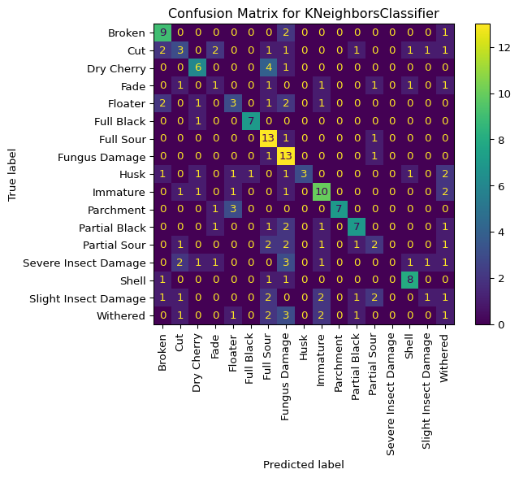</p>
<figcaption>Confusion Matrix for KNN Model</figcaption>
</figure>
</div>
</div>
</div>
<p>Looking at the confusion matrix, we can see that some classes have decent performance i.e.&nbsp;“Husk”, “Full Black”, “Parchment”, but others have poor performance, such as the “Withered” class.</p>
<div id="cell-randimg-KNN_model" class="cell" data-execution_count="16">
<div class="sourceCode cell-code" id="cb19"><pre class="sourceCode python code-with-copy"><code class="sourceCode python"><span id="cb19-1"><a href="#cb19-1" aria-hidden="true" tabindex="-1"></a><span class="co"># Check the results of a random image with the KNN model</span></span>
<span id="cb19-2"><a href="#cb19-2" aria-hidden="true" tabindex="-1"></a>result_random_img(knn_model, X_test<span class="op">=</span>X_test, test_labels<span class="op">=</span> y_true, feature_extractor<span class="op">=</span>vgg_mdl, le<span class="op">=</span>label_enc)</span></code><button title="Copy to Clipboard" class="code-copy-button"><i class="bi"></i></button></pre></div>
<div class="cell-output cell-output-stdout">
<div class="ansi-escaped-output">
<pre><span class="ansi-bold">1/1</span> <span class="ansi-green-fg">━━━━━━━━━━━━━━━━━━━━</span> <span class="ansi-bold">0s</span> 230ms/step

<span class="ansi-bold">1/1</span> <span class="ansi-green-fg">━━━━━━━━━━━━━━━━━━━━</span> <span class="ansi-bold">0s</span> 236ms/step

The prediction for this image is:  Parchment

The actual label for this image is:  Parchment
</pre>
</div>
</div>
<div class="cell-output cell-output-display">
<div id="randimg-knn_model" class="quarto-figure quarto-figure-center anchored">
<figure class="figure">
<p>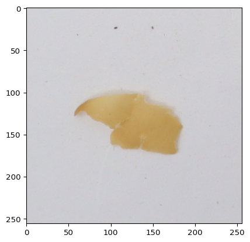</p>
<figcaption>Random Image with Label and Prediction using KNN Model</figcaption>
</figure>
</div>
</div>
</div>
<p>The random image above shows its true label and the predicted label using the KNN model.</p>
</section>
<section id="random-forest-classifier-1" class="level3">
<h3 class="anchored" data-anchor-id="random-forest-classifier-1">Random Forest Classifier</h3>
<div id="classification_report-rf_model" class="cell" data-execution_count="17">
<div class="sourceCode cell-code" id="cb20"><pre class="sourceCode python code-with-copy"><code class="sourceCode python"><span id="cb20-1"><a href="#cb20-1" aria-hidden="true" tabindex="-1"></a><span class="co"># Test model performance</span></span>
<span id="cb20-2"><a href="#cb20-2" aria-hidden="true" tabindex="-1"></a>y_pred_tf <span class="op">=</span> rf_model.predict(classifier_X_test)</span>
<span id="cb20-3"><a href="#cb20-3" aria-hidden="true" tabindex="-1"></a>y_pred <span class="op">=</span> label_enc.inverse_transform(y_pred_tf)</span>
<span id="cb20-4"><a href="#cb20-4" aria-hidden="true" tabindex="-1"></a>y_score <span class="op">=</span> rf_model.predict_proba(classifier_X_test)</span>
<span id="cb20-5"><a href="#cb20-5" aria-hidden="true" tabindex="-1"></a></span>
<span id="cb20-6"><a href="#cb20-6" aria-hidden="true" tabindex="-1"></a><span class="bu">print</span>(classification_report(y_true, y_pred))</span>
<span id="cb20-7"><a href="#cb20-7" aria-hidden="true" tabindex="-1"></a></span>
<span id="cb20-8"><a href="#cb20-8" aria-hidden="true" tabindex="-1"></a>micro_roc_auc_ovr <span class="op">=</span> roc_auc_score(</span>
<span id="cb20-9"><a href="#cb20-9" aria-hidden="true" tabindex="-1"></a>    y_true,</span>
<span id="cb20-10"><a href="#cb20-10" aria-hidden="true" tabindex="-1"></a>    y_score,</span>
<span id="cb20-11"><a href="#cb20-11" aria-hidden="true" tabindex="-1"></a>    multi_class<span class="op">=</span><span class="st">"ovr"</span>,</span>
<span id="cb20-12"><a href="#cb20-12" aria-hidden="true" tabindex="-1"></a>    average<span class="op">=</span><span class="st">"micro"</span></span>
<span id="cb20-13"><a href="#cb20-13" aria-hidden="true" tabindex="-1"></a>)</span>
<span id="cb20-14"><a href="#cb20-14" aria-hidden="true" tabindex="-1"></a></span>
<span id="cb20-15"><a href="#cb20-15" aria-hidden="true" tabindex="-1"></a><span class="bu">print</span>(<span class="ss">f"Micro-averaged One-vs-Rest ROC AUC score:</span><span class="ch">\n</span><span class="sc">{</span>micro_roc_auc_ovr<span class="sc">:.2f}</span><span class="ss">"</span>)</span></code><button title="Copy to Clipboard" class="code-copy-button"><i class="bi"></i></button></pre></div>
<div class="cell-output cell-output-stdout">
<pre><code>                      precision    recall  f1-score   support

              Broken       0.78      0.58      0.67        12
                 Cut       0.41      0.69      0.51        13
          Dry Cherry       0.88      0.64      0.74        11
                Fade       0.33      0.14      0.20         7
             Floater       0.71      0.50      0.59        10
          Full Black       0.70      0.88      0.78         8
           Full Sour       0.75      0.80      0.77        15
       Fungus Damage       0.88      1.00      0.94        15
                Husk       0.88      0.64      0.74        11
            Immature       0.65      0.81      0.72        16
           Parchment       0.82      0.82      0.82        11
       Partial Black       0.69      0.69      0.69        13
        Partial Sour       0.80      0.40      0.53        10
Severe Insect Damage       0.67      0.36      0.47        11
               Shell       0.71      0.91      0.80        11
Slight Insect Damage       0.36      0.36      0.36        11
            Withered       0.31      0.45      0.37        11

            accuracy                           0.65       196
           macro avg       0.67      0.63      0.63       196
        weighted avg       0.68      0.65      0.65       196

Micro-averaged One-vs-Rest ROC AUC score:
0.97</code></pre>
</div>
</div>
<p>The full classification report for Random Forest model shows an overall accuracy of 0.65 which is OK considering that we are using a pre-trained CNN for the feature extraction. The ROC AUC is 0.97 which is actually quite good, but could be further improved. There are a few classes (“Withered”, “Insect Damage”, and “Fade”) have poor precision using this model and it could potentially be improved with further hyperparameter tuning.</p>
<div id="cell-cm-rf_model" class="cell" data-execution_count="18">
<div class="sourceCode cell-code" id="cb22"><pre class="sourceCode python code-with-copy"><code class="sourceCode python"><span id="cb22-1"><a href="#cb22-1" aria-hidden="true" tabindex="-1"></a><span class="co"># Plot Confusion Matrix for Random Forest Model</span></span>
<span id="cb22-2"><a href="#cb22-2" aria-hidden="true" tabindex="-1"></a>plot_confusion_matrix(rf_model, y_true<span class="op">=</span>y_true, y_pred<span class="op">=</span>y_pred, le <span class="op">=</span> label_enc)</span></code><button title="Copy to Clipboard" class="code-copy-button"><i class="bi"></i></button></pre></div>
<div class="cell-output cell-output-display">
<div id="cm-rf_model" class="quarto-figure quarto-figure-center anchored">
<figure class="figure">
<p>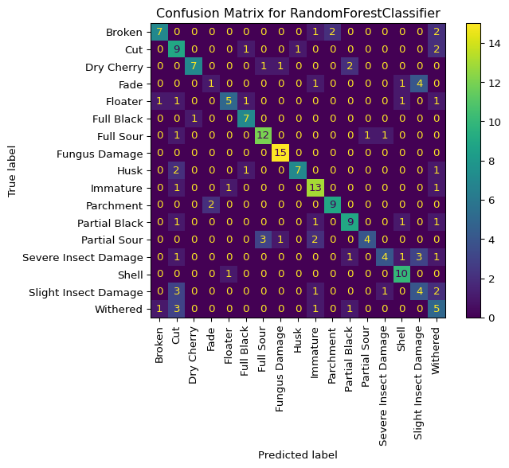</p>
<figcaption>Confusion Matrix for Random Forest Model</figcaption>
</figure>
</div>
</div>
</div>
<p>Looking at the confusion matrix, we can see that the Random Forest model has decent performance across the majority of classes, but struggles with a few classes in particular.</p>
<div id="cell-randimg-rf_model" class="cell" data-execution_count="19">
<div class="sourceCode cell-code" id="cb23"><pre class="sourceCode python code-with-copy"><code class="sourceCode python"><span id="cb23-1"><a href="#cb23-1" aria-hidden="true" tabindex="-1"></a><span class="co"># Check results using a random image with the Random Forest Model</span></span>
<span id="cb23-2"><a href="#cb23-2" aria-hidden="true" tabindex="-1"></a>result_random_img(rf_model, X_test<span class="op">=</span>X_test, test_labels<span class="op">=</span> y_true, feature_extractor<span class="op">=</span>vgg_mdl, le<span class="op">=</span>label_enc)</span></code><button title="Copy to Clipboard" class="code-copy-button"><i class="bi"></i></button></pre></div>
<div class="cell-output cell-output-stdout">
<div class="ansi-escaped-output">
<pre><span class="ansi-bold">1/1</span> <span class="ansi-green-fg">━━━━━━━━━━━━━━━━━━━━</span> <span class="ansi-bold">0s</span> 193ms/step

<span class="ansi-bold">1/1</span> <span class="ansi-green-fg">━━━━━━━━━━━━━━━━━━━━</span> <span class="ansi-bold">0s</span> 199ms/step

The prediction for this image is:  Partial Black

The actual label for this image is:  Partial Black
</pre>
</div>
</div>
<div class="cell-output cell-output-display">
<div id="randimg-rf_model" class="quarto-figure quarto-figure-center anchored">
<figure class="figure">
<p>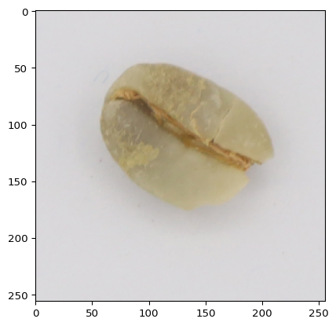</p>
<figcaption>Random Image with Label and Prediction using RF Model</figcaption>
</figure>
</div>
</div>
</div>
<p>The random image above shows its true label and the predicted label using the Random Forest model.</p>
</section>
<section id="xgboost-classifier-1" class="level3">
<h3 class="anchored" data-anchor-id="xgboost-classifier-1">XGBoost Classifier</h3>
<div id="classification_report-xgboost_model" class="cell" data-execution_count="20">
<div class="sourceCode cell-code" id="cb24"><pre class="sourceCode python code-with-copy"><code class="sourceCode python"><span id="cb24-1"><a href="#cb24-1" aria-hidden="true" tabindex="-1"></a><span class="co"># Test model performance</span></span>
<span id="cb24-2"><a href="#cb24-2" aria-hidden="true" tabindex="-1"></a>y_pred_tf <span class="op">=</span> xgboost_model.predict(classifier_X_test)</span>
<span id="cb24-3"><a href="#cb24-3" aria-hidden="true" tabindex="-1"></a>y_pred <span class="op">=</span> label_enc.inverse_transform(y_pred_tf)</span>
<span id="cb24-4"><a href="#cb24-4" aria-hidden="true" tabindex="-1"></a>y_score <span class="op">=</span> xgboost_model.predict_proba(classifier_X_test)</span>
<span id="cb24-5"><a href="#cb24-5" aria-hidden="true" tabindex="-1"></a></span>
<span id="cb24-6"><a href="#cb24-6" aria-hidden="true" tabindex="-1"></a><span class="bu">print</span>(classification_report(y_true, y_pred))</span>
<span id="cb24-7"><a href="#cb24-7" aria-hidden="true" tabindex="-1"></a></span>
<span id="cb24-8"><a href="#cb24-8" aria-hidden="true" tabindex="-1"></a>micro_roc_auc_ovr <span class="op">=</span> roc_auc_score(</span>
<span id="cb24-9"><a href="#cb24-9" aria-hidden="true" tabindex="-1"></a>    y_true,</span>
<span id="cb24-10"><a href="#cb24-10" aria-hidden="true" tabindex="-1"></a>    y_score,</span>
<span id="cb24-11"><a href="#cb24-11" aria-hidden="true" tabindex="-1"></a>    multi_class<span class="op">=</span><span class="st">"ovr"</span>,</span>
<span id="cb24-12"><a href="#cb24-12" aria-hidden="true" tabindex="-1"></a>    average<span class="op">=</span><span class="st">"micro"</span></span>
<span id="cb24-13"><a href="#cb24-13" aria-hidden="true" tabindex="-1"></a>)</span>
<span id="cb24-14"><a href="#cb24-14" aria-hidden="true" tabindex="-1"></a></span>
<span id="cb24-15"><a href="#cb24-15" aria-hidden="true" tabindex="-1"></a><span class="bu">print</span>(<span class="ss">f"Micro-averaged One-vs-Rest ROC AUC score:</span><span class="ch">\n</span><span class="sc">{</span>micro_roc_auc_ovr<span class="sc">:.2f}</span><span class="ss">"</span>)</span></code><button title="Copy to Clipboard" class="code-copy-button"><i class="bi"></i></button></pre></div>
<div class="cell-output cell-output-stdout">
<pre><code>                      precision    recall  f1-score   support

              Broken       0.71      0.42      0.53        12
                 Cut       0.53      0.62      0.57        13
          Dry Cherry       1.00      0.82      0.90        11
                Fade       0.33      0.14      0.20         7
             Floater       0.64      0.70      0.67        10
          Full Black       0.73      1.00      0.84         8
           Full Sour       1.00      0.67      0.80        15
       Fungus Damage       0.82      0.93      0.88        15
                Husk       0.77      0.91      0.83        11
            Immature       0.81      0.81      0.81        16
           Parchment       0.75      0.82      0.78        11
       Partial Black       0.83      0.77      0.80        13
        Partial Sour       0.50      0.50      0.50        10
Severe Insect Damage       1.00      0.64      0.78        11
               Shell       0.77      0.91      0.83        11
Slight Insect Damage       0.40      0.55      0.46        11
            Withered       0.47      0.64      0.54        11

            accuracy                           0.71       196
           macro avg       0.71      0.70      0.69       196
        weighted avg       0.73      0.71      0.71       196

Micro-averaged One-vs-Rest ROC AUC score:
0.97</code></pre>
</div>
</div>
<p>The full classification report for XGBoost model shows an overall accuracy of 0.709 which is quite good considering that we are using a pre-trained CNN for the feature extraction. The ROC AUC is 0.97 which is good by most standards. There are a few classes (i.e.&nbsp;“Fade” and “Slight Insect Damage”) that have low precision using this model. However, model has quite good precision on the majority of classes with a weighted average of close to 73%. Nevertheless, the model could potentially be improved with further hyperparameter tuning (which I did not do as a result of the the time to fit this model on my mediocre laptop).</p>
<div id="cell-cm-xgboost_model" class="cell" data-execution_count="21">
<div class="sourceCode cell-code" id="cb26"><pre class="sourceCode python code-with-copy"><code class="sourceCode python"><span id="cb26-1"><a href="#cb26-1" aria-hidden="true" tabindex="-1"></a><span class="co"># Plot Confusion Matrix for XGBoost Model</span></span>
<span id="cb26-2"><a href="#cb26-2" aria-hidden="true" tabindex="-1"></a>plot_confusion_matrix(xgboost_model, y_true<span class="op">=</span>y_true, y_pred<span class="op">=</span>y_pred, le <span class="op">=</span> label_enc)</span></code><button title="Copy to Clipboard" class="code-copy-button"><i class="bi"></i></button></pre></div>
<div class="cell-output cell-output-display">
<div id="cm-xgboost_model" class="quarto-figure quarto-figure-center anchored">
<figure class="figure">
<p>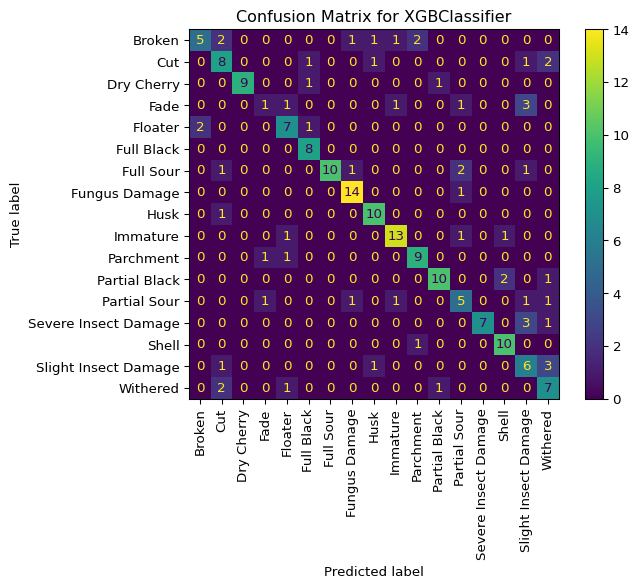</p>
<figcaption>Confusion Matrix for xgboost Model</figcaption>
</figure>
</div>
</div>
</div>
<p>Looking at the confusion matrix, we can see that the XGBoost model has good performance across the majority of classes.</p>
<div id="cell-randimg-xgboost_model" class="cell" data-execution_count="22">
<div class="sourceCode cell-code" id="cb27"><pre class="sourceCode python code-with-copy"><code class="sourceCode python"><span id="cb27-1"><a href="#cb27-1" aria-hidden="true" tabindex="-1"></a><span class="co"># Check results on a random image with the xgboost model</span></span>
<span id="cb27-2"><a href="#cb27-2" aria-hidden="true" tabindex="-1"></a>result_random_img(xgboost_model, X_test<span class="op">=</span>X_test, test_labels<span class="op">=</span> y_true, feature_extractor<span class="op">=</span>vgg_mdl, le<span class="op">=</span>label_enc)</span></code><button title="Copy to Clipboard" class="code-copy-button"><i class="bi"></i></button></pre></div>
<div class="cell-output cell-output-stdout">
<div class="ansi-escaped-output">
<pre><span class="ansi-bold">1/1</span> <span class="ansi-green-fg">━━━━━━━━━━━━━━━━━━━━</span> <span class="ansi-bold">0s</span> 202ms/step

<span class="ansi-bold">1/1</span> <span class="ansi-green-fg">━━━━━━━━━━━━━━━━━━━━</span> <span class="ansi-bold">0s</span> 207ms/step

The prediction for this image is:  Immature

The actual label for this image is:  Immature
</pre>
</div>
</div>
<div class="cell-output cell-output-display">
<div id="randimg-xgboost_model" class="quarto-figure quarto-figure-center anchored">
<figure class="figure">
<p>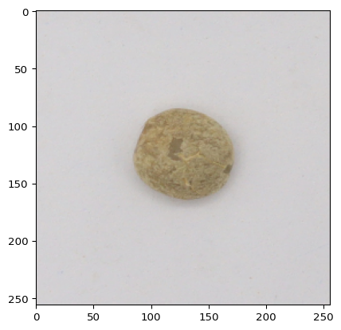</p>
<figcaption>Random Image with Label and Prediction using xgboost Model</figcaption>
</figure>
</div>
</div>
</div>
<p>The random image above shows its true label and the predicted label using the XGBoost model.</p>
</section>
</section>
<section id="comparison-between-models" class="level2">
<h2 class="anchored" data-anchor-id="comparison-between-models">Comparison Between Models</h2>
<div class="cell" data-tbl-cap="Simplified Classification Report Metrics for All Models" data-execution_count="23">
<div class="sourceCode cell-code" id="cb28"><pre class="sourceCode python code-with-copy"><code class="sourceCode python"><span id="cb28-1"><a href="#cb28-1" aria-hidden="true" tabindex="-1"></a><span class="co"># Classification Reports for all models</span></span>
<span id="cb28-2"><a href="#cb28-2" aria-hidden="true" tabindex="-1"></a>model_list <span class="op">=</span> [knn_model, rf_model, xgboost_model]</span>
<span id="cb28-3"><a href="#cb28-3" aria-hidden="true" tabindex="-1"></a>comparison_df <span class="op">=</span> compare_classification_reports(list_of_models<span class="op">=</span>model_list, y_test<span class="op">=</span>y_test, X_test<span class="op">=</span>classifier_X_test)</span>
<span id="cb28-4"><a href="#cb28-4" aria-hidden="true" tabindex="-1"></a>filtered_df <span class="op">=</span> comparison_df[comparison_df[<span class="st">'metric'</span>].isin([<span class="st">'accuracy'</span>, <span class="st">'macro avg'</span>, <span class="st">'weighted avg'</span>])]</span>
<span id="cb28-5"><a href="#cb28-5" aria-hidden="true" tabindex="-1"></a>filtered_df <span class="op">=</span> filtered_df.drop(columns<span class="op">=</span> <span class="st">'support'</span>)</span>
<span id="cb28-6"><a href="#cb28-6" aria-hidden="true" tabindex="-1"></a>display(Markdown(filtered_df.to_markdown(index <span class="op">=</span> <span class="va">False</span>)))</span></code><button title="Copy to Clipboard" class="code-copy-button"><i class="bi"></i></button></pre></div>
<div id="class_report_all_models" class="cell-output cell-output-display cell-output-markdown">
<table class="caption-top table table-sm table-striped small">
<caption>Simplified Classification Report Metrics for All Models</caption>
<colgroup>
<col style="width: 19%">
<col style="width: 17%">
<col style="width: 13%">
<col style="width: 16%">
<col style="width: 32%">
</colgroup>
<thead>
<tr class="header">
<th style="text-align: left;">metric</th>
<th style="text-align: right;">precision</th>
<th style="text-align: right;">recall</th>
<th style="text-align: right;">f1-score</th>
<th style="text-align: left;">model</th>
</tr>
</thead>
<tbody>
<tr class="odd">
<td style="text-align: left;">accuracy</td>
<td style="text-align: right;">0.479592</td>
<td style="text-align: right;">0.479592</td>
<td style="text-align: right;">0.479592</td>
<td style="text-align: left;">KNeighborsClassifier</td>
</tr>
<tr class="even">
<td style="text-align: left;">macro avg</td>
<td style="text-align: right;">0.479817</td>
<td style="text-align: right;">0.456415</td>
<td style="text-align: right;">0.438133</td>
<td style="text-align: left;">KNeighborsClassifier</td>
</tr>
<tr class="odd">
<td style="text-align: left;">weighted avg</td>
<td style="text-align: right;">0.480872</td>
<td style="text-align: right;">0.479592</td>
<td style="text-align: right;">0.448256</td>
<td style="text-align: left;">KNeighborsClassifier</td>
</tr>
<tr class="even">
<td style="text-align: left;">accuracy</td>
<td style="text-align: right;">0.653061</td>
<td style="text-align: right;">0.653061</td>
<td style="text-align: right;">0.653061</td>
<td style="text-align: left;">RandomForestClassifier</td>
</tr>
<tr class="odd">
<td style="text-align: left;">macro avg</td>
<td style="text-align: right;">0.666731</td>
<td style="text-align: right;">0.628243</td>
<td style="text-align: right;">0.629587</td>
<td style="text-align: left;">RandomForestClassifier</td>
</tr>
<tr class="even">
<td style="text-align: left;">weighted avg</td>
<td style="text-align: right;">0.675974</td>
<td style="text-align: right;">0.653061</td>
<td style="text-align: right;">0.648039</td>
<td style="text-align: left;">RandomForestClassifier</td>
</tr>
<tr class="odd">
<td style="text-align: left;">accuracy</td>
<td style="text-align: right;">0.709184</td>
<td style="text-align: right;">0.709184</td>
<td style="text-align: right;">0.709184</td>
<td style="text-align: left;">XGBClassifier</td>
</tr>
<tr class="even">
<td style="text-align: left;">macro avg</td>
<td style="text-align: right;">0.709946</td>
<td style="text-align: right;">0.695845</td>
<td style="text-align: right;">0.689475</td>
<td style="text-align: left;">XGBClassifier</td>
</tr>
<tr class="odd">
<td style="text-align: left;">weighted avg</td>
<td style="text-align: right;">0.729146</td>
<td style="text-align: right;">0.709184</td>
<td style="text-align: right;">0.706482</td>
<td style="text-align: left;">XGBClassifier</td>
</tr>
</tbody>
</table>
</div>
</div>
<div id="cell-roc_all_models" class="cell" data-execution_count="24">
<div class="sourceCode cell-code" id="cb29"><pre class="sourceCode python code-with-copy"><code class="sourceCode python"><span id="cb29-1"><a href="#cb29-1" aria-hidden="true" tabindex="-1"></a><span class="co"># ROC Curves for all models</span></span>
<span id="cb29-2"><a href="#cb29-2" aria-hidden="true" tabindex="-1"></a>plot_ROC_for_all(list_of_models<span class="op">=</span>model_list, y_train<span class="op">=</span>y_train, y_test<span class="op">=</span>y_test, X_test<span class="op">=</span>classifier_X_test)</span></code><button title="Copy to Clipboard" class="code-copy-button"><i class="bi"></i></button></pre></div>
<div class="cell-output cell-output-display">
<div id="roc_all_models" class="quarto-figure quarto-figure-center anchored">
<figure class="figure">
<p>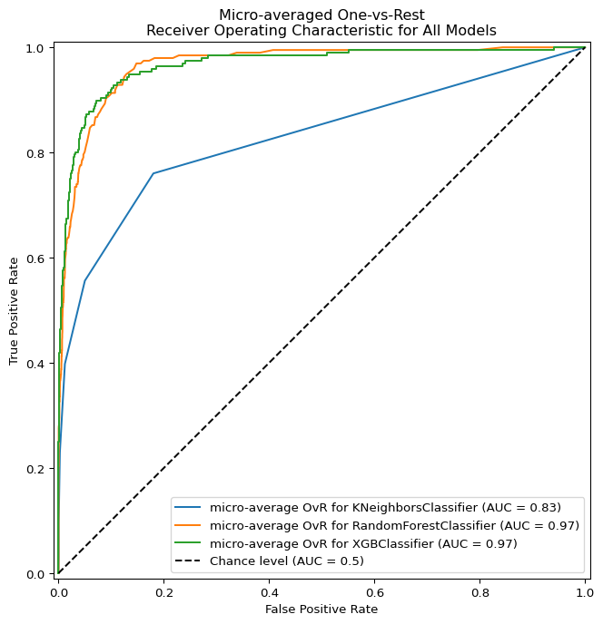</p>
<figcaption>ROC Curves for all Models Tested</figcaption>
</figure>
</div>
</div>
</div>
</section>
<section id="conclusions" class="level2">
<h2 class="anchored" data-anchor-id="conclusions">Conclusions</h2>
<p>One can clearly see from the ROC curves, the accuracy, precision, recall, and f1-score that the best performing model was the XGBoost model with the Random Forest coming in a close second. The accuracy of both models using the pre-trained VGG16 model as a feature extractor is quite good considering that there is no dataset specific training activity on the CNN. This could be further improved, by augmenting the training image set and performing additional training on the dataset. However, this is out of the scope of this project on supervised learning techniques. The Random Forest model and XGBoost model could also benefit from a further exploration of tuning of the hyperparameters for each model. This again, was out of the scope of this project as I did not want to focus on a single modelling approach.</p>
</section>

<section id="system-information" class="level2">
<h2 class="anchored" data-anchor-id="system-information">System Information</h2>
<div id="7b72ea1f" class="cell" data-execution_count="25">
<div class="sourceCode cell-code" id="cb30"><pre class="sourceCode python code-with-copy"><code class="sourceCode python"><span id="cb30-1"><a href="#cb30-1" aria-hidden="true" tabindex="-1"></a><span class="im">import</span> platform</span>
<span id="cb30-2"><a href="#cb30-2" aria-hidden="true" tabindex="-1"></a><span class="bu">print</span>(platform.platform())</span>
<span id="cb30-3"><a href="#cb30-3" aria-hidden="true" tabindex="-1"></a><span class="bu">print</span>(platform.processor())</span>
<span id="cb30-4"><a href="#cb30-4" aria-hidden="true" tabindex="-1"></a><span class="bu">print</span>(<span class="st">"python version:"</span>, platform.python_version())</span></code><button title="Copy to Clipboard" class="code-copy-button"><i class="bi"></i></button></pre></div>
<div class="cell-output cell-output-stdout">
<pre><code>Windows-10-10.0.19045-SP0
AMD64 Family 25 Model 68 Stepping 1, AuthenticAMD
python version: 3.13.3</code></pre>
</div>
</div>
<div id="refs" class="references csl-bib-body hanging-indent" data-entry-spacing="0" role="list">
<div id="ref-Arwatchananukul_2024" class="csl-entry" role="listitem">
Arwatchananukul, Sujitra. 2024. <span>“Coffee Green Bean with 17 Defects (Original).”</span> <em>Kaggle</em>. <a href="https://www.kaggle.com/datasets/sujitraarw/coffee-green-bean-with-17-defects-original">https://www.kaggle.com/datasets/sujitraarw/coffee-green-bean-with-17-defects-original</a>.
</div>
<div id="ref-ARWATCHANANUKUL2024100680" class="csl-entry" role="listitem">
Arwatchananukul, Sujitra, Dan Xu, Phasit Charoenkwan, Sai Aung Moon, and Rattapon Saengrayap. 2024. <span>“Implementing a Deep Learning Model for Defect Classification in Thai Arabica Green Coffee Beans.”</span> <em>Smart Agricultural Technology</em> 9: 100680. https://doi.org/<a href="https://doi.org/10.1016/j.atech.2024.100680">https://doi.org/10.1016/j.atech.2024.100680</a>.
</div>
<div id="ref-Carpenter_2021" class="csl-entry" role="listitem">
Carpenter, Adam S. 2021. <span>“How to Grade Green Coffee - Size, Defects, Scoring Quality.”</span> <em>ROCC Coffee</em>. ROCC Coffee. <a href="https://sca.training/howtocoffee/2021/1/12/coffee-grading-101">https://sca.training/howtocoffee/2021/1/12/coffee-grading-101</a>.
</div>
<div id="ref-Griffin_2006" class="csl-entry" role="listitem">
Griffin, Michael. 2006. <span>“SCAA Coffee Beans Classification.”</span> <em>SCAA Green Coffee Beans Classification</em>. Coffee Research Institute. <a href="https://www.coffeeresearch.org/coffee/scaaclass.htm">https://www.coffeeresearch.org/coffee/scaaclass.htm</a>.
</div>
<div id="ref-spe2017washed" class="csl-entry" role="listitem">
Spe. 2017. <em>The Washed Arabica Green Coffee Defect Guide: SCA Handbook</em>. Specialty Coffee Association. <a href="https://books.google.ch/books?id=pcOvtAEACAAJ">https://books.google.ch/books?id=pcOvtAEACAAJ</a>.
</div>
<div id="ref-https://doi.org/10.1155/2022/2013181" class="csl-entry" role="listitem">
Xi, Erhui. 2022. <span>“Image Classification and Recognition Based on Deep Learning and Random Forest Algorithm.”</span> <em>Wireless Communications and Mobile Computing</em> 2022 (1): 2013181. https://doi.org/<a href="https://doi.org/10.1155/2022/2013181">https://doi.org/10.1155/2022/2013181</a>.
</div>
</div>
</section>
</section>

<div id="quarto-appendix" class="default"><section class="quarto-appendix-contents" role="doc-bibliography" id="quarto-bibliography"><h2 class="anchored quarto-appendix-heading">References</h2><section id="refs" class="level2">
<h2 class="anchored" data-anchor-id="refs">References</h2>
</section></section></div></main>
<!-- /main column -->
<script id="quarto-html-after-body" type="application/javascript">
  window.document.addEventListener("DOMContentLoaded", function (event) {
    const icon = "";
    const anchorJS = new window.AnchorJS();
    anchorJS.options = {
      placement: 'right',
      icon: icon
    };
    anchorJS.add('.anchored');
    const isCodeAnnotation = (el) => {
      for (const clz of el.classList) {
        if (clz.startsWith('code-annotation-')) {                     
          return true;
        }
      }
      return false;
    }
    const onCopySuccess = function(e) {
      // button target
      const button = e.trigger;
      // don't keep focus
      button.blur();
      // flash "checked"
      button.classList.add('code-copy-button-checked');
      var currentTitle = button.getAttribute("title");
      button.setAttribute("title", "Copied!");
      let tooltip;
      if (window.bootstrap) {
        button.setAttribute("data-bs-toggle", "tooltip");
        button.setAttribute("data-bs-placement", "left");
        button.setAttribute("data-bs-title", "Copied!");
        tooltip = new bootstrap.Tooltip(button, 
          { trigger: "manual", 
            customClass: "code-copy-button-tooltip",
            offset: [0, -8]});
        tooltip.show();    
      }
      setTimeout(function() {
        if (tooltip) {
          tooltip.hide();
          button.removeAttribute("data-bs-title");
          button.removeAttribute("data-bs-toggle");
          button.removeAttribute("data-bs-placement");
        }
        button.setAttribute("title", currentTitle);
        button.classList.remove('code-copy-button-checked');
      }, 1000);
      // clear code selection
      e.clearSelection();
    }
    const getTextToCopy = function(trigger) {
        const codeEl = trigger.previousElementSibling.cloneNode(true);
        for (const childEl of codeEl.children) {
          if (isCodeAnnotation(childEl)) {
            childEl.remove();
          }
        }
        return codeEl.innerText;
    }
    const clipboard = new window.ClipboardJS('.code-copy-button:not([data-in-quarto-modal])', {
      text: getTextToCopy
    });
    clipboard.on('success', onCopySuccess);
    if (window.document.getElementById('quarto-embedded-source-code-modal')) {
      const clipboardModal = new window.ClipboardJS('.code-copy-button[data-in-quarto-modal]', {
        text: getTextToCopy,
        container: window.document.getElementById('quarto-embedded-source-code-modal')
      });
      clipboardModal.on('success', onCopySuccess);
    }
      var localhostRegex = new RegExp(/^(?:http|https):\/\/localhost\:?[0-9]*\//);
      var mailtoRegex = new RegExp(/^mailto:/);
        var filterRegex = new RegExp('/' + window.location.host + '/');
      var isInternal = (href) => {
          return filterRegex.test(href) || localhostRegex.test(href) || mailtoRegex.test(href);
      }
      // Inspect non-navigation links and adorn them if external
     var links = window.document.querySelectorAll('a[href]:not(.nav-link):not(.navbar-brand):not(.toc-action):not(.sidebar-link):not(.sidebar-item-toggle):not(.pagination-link):not(.no-external):not([aria-hidden]):not(.dropdown-item):not(.quarto-navigation-tool):not(.about-link)');
      for (var i=0; i<links.length; i++) {
        const link = links[i];
        if (!isInternal(link.href)) {
          // undo the damage that might have been done by quarto-nav.js in the case of
          // links that we want to consider external
          if (link.dataset.originalHref !== undefined) {
            link.href = link.dataset.originalHref;
          }
        }
      }
    function tippyHover(el, contentFn, onTriggerFn, onUntriggerFn) {
      const config = {
        allowHTML: true,
        maxWidth: 500,
        delay: 100,
        arrow: false,
        appendTo: function(el) {
            return el.parentElement;
        },
        interactive: true,
        interactiveBorder: 10,
        theme: 'quarto',
        placement: 'bottom-start',
      };
      if (contentFn) {
        config.content = contentFn;
      }
      if (onTriggerFn) {
        config.onTrigger = onTriggerFn;
      }
      if (onUntriggerFn) {
        config.onUntrigger = onUntriggerFn;
      }
      window.tippy(el, config); 
    }
    const noterefs = window.document.querySelectorAll('a[role="doc-noteref"]');
    for (var i=0; i<noterefs.length; i++) {
      const ref = noterefs[i];
      tippyHover(ref, function() {
        // use id or data attribute instead here
        let href = ref.getAttribute('data-footnote-href') || ref.getAttribute('href');
        try { href = new URL(href).hash; } catch {}
        const id = href.replace(/^#\/?/, "");
        const note = window.document.getElementById(id);
        if (note) {
          return note.innerHTML;
        } else {
          return "";
        }
      });
    }
    const xrefs = window.document.querySelectorAll('a.quarto-xref');
    const processXRef = (id, note) => {
      // Strip column container classes
      const stripColumnClz = (el) => {
        el.classList.remove("page-full", "page-columns");
        if (el.children) {
          for (const child of el.children) {
            stripColumnClz(child);
          }
        }
      }
      stripColumnClz(note)
      if (id === null || id.startsWith('sec-')) {
        // Special case sections, only their first couple elements
        const container = document.createElement("div");
        if (note.children && note.children.length > 2) {
          container.appendChild(note.children[0].cloneNode(true));
          for (let i = 1; i < note.children.length; i++) {
            const child = note.children[i];
            if (child.tagName === "P" && child.innerText === "") {
              continue;
            } else {
              container.appendChild(child.cloneNode(true));
              break;
            }
          }
          if (window.Quarto?.typesetMath) {
            window.Quarto.typesetMath(container);
          }
          return container.innerHTML
        } else {
          if (window.Quarto?.typesetMath) {
            window.Quarto.typesetMath(note);
          }
          return note.innerHTML;
        }
      } else {
        // Remove any anchor links if they are present
        const anchorLink = note.querySelector('a.anchorjs-link');
        if (anchorLink) {
          anchorLink.remove();
        }
        if (window.Quarto?.typesetMath) {
          window.Quarto.typesetMath(note);
        }
        if (note.classList.contains("callout")) {
          return note.outerHTML;
        } else {
          return note.innerHTML;
        }
      }
    }
    for (var i=0; i<xrefs.length; i++) {
      const xref = xrefs[i];
      tippyHover(xref, undefined, function(instance) {
        instance.disable();
        let url = xref.getAttribute('href');
        let hash = undefined; 
        if (url.startsWith('#')) {
          hash = url;
        } else {
          try { hash = new URL(url).hash; } catch {}
        }
        if (hash) {
          const id = hash.replace(/^#\/?/, "");
          const note = window.document.getElementById(id);
          if (note !== null) {
            try {
              const html = processXRef(id, note.cloneNode(true));
              instance.setContent(html);
            } finally {
              instance.enable();
              instance.show();
            }
          } else {
            // See if we can fetch this
            fetch(url.split('#')[0])
            .then(res => res.text())
            .then(html => {
              const parser = new DOMParser();
              const htmlDoc = parser.parseFromString(html, "text/html");
              const note = htmlDoc.getElementById(id);
              if (note !== null) {
                const html = processXRef(id, note);
                instance.setContent(html);
              } 
            }).finally(() => {
              instance.enable();
              instance.show();
            });
          }
        } else {
          // See if we can fetch a full url (with no hash to target)
          // This is a special case and we should probably do some content thinning / targeting
          fetch(url)
          .then(res => res.text())
          .then(html => {
            const parser = new DOMParser();
            const htmlDoc = parser.parseFromString(html, "text/html");
            const note = htmlDoc.querySelector('main.content');
            if (note !== null) {
              // This should only happen for chapter cross references
              // (since there is no id in the URL)
              // remove the first header
              if (note.children.length > 0 && note.children[0].tagName === "HEADER") {
                note.children[0].remove();
              }
              const html = processXRef(null, note);
              instance.setContent(html);
            } 
          }).finally(() => {
            instance.enable();
            instance.show();
          });
        }
      }, function(instance) {
      });
    }
        let selectedAnnoteEl;
        const selectorForAnnotation = ( cell, annotation) => {
          let cellAttr = 'data-code-cell="' + cell + '"';
          let lineAttr = 'data-code-annotation="' +  annotation + '"';
          const selector = 'span[' + cellAttr + '][' + lineAttr + ']';
          return selector;
        }
        const selectCodeLines = (annoteEl) => {
          const doc = window.document;
          const targetCell = annoteEl.getAttribute("data-target-cell");
          const targetAnnotation = annoteEl.getAttribute("data-target-annotation");
          const annoteSpan = window.document.querySelector(selectorForAnnotation(targetCell, targetAnnotation));
          const lines = annoteSpan.getAttribute("data-code-lines").split(",");
          const lineIds = lines.map((line) => {
            return targetCell + "-" + line;
          })
          let top = null;
          let height = null;
          let parent = null;
          if (lineIds.length > 0) {
              //compute the position of the single el (top and bottom and make a div)
              const el = window.document.getElementById(lineIds[0]);
              top = el.offsetTop;
              height = el.offsetHeight;
              parent = el.parentElement.parentElement;
            if (lineIds.length > 1) {
              const lastEl = window.document.getElementById(lineIds[lineIds.length - 1]);
              const bottom = lastEl.offsetTop + lastEl.offsetHeight;
              height = bottom - top;
            }
            if (top !== null && height !== null && parent !== null) {
              // cook up a div (if necessary) and position it 
              let div = window.document.getElementById("code-annotation-line-highlight");
              if (div === null) {
                div = window.document.createElement("div");
                div.setAttribute("id", "code-annotation-line-highlight");
                div.style.position = 'absolute';
                parent.appendChild(div);
              }
              div.style.top = top - 2 + "px";
              div.style.height = height + 4 + "px";
              div.style.left = 0;
              let gutterDiv = window.document.getElementById("code-annotation-line-highlight-gutter");
              if (gutterDiv === null) {
                gutterDiv = window.document.createElement("div");
                gutterDiv.setAttribute("id", "code-annotation-line-highlight-gutter");
                gutterDiv.style.position = 'absolute';
                const codeCell = window.document.getElementById(targetCell);
                const gutter = codeCell.querySelector('.code-annotation-gutter');
                gutter.appendChild(gutterDiv);
              }
              gutterDiv.style.top = top - 2 + "px";
              gutterDiv.style.height = height + 4 + "px";
            }
            selectedAnnoteEl = annoteEl;
          }
        };
        const unselectCodeLines = () => {
          const elementsIds = ["code-annotation-line-highlight", "code-annotation-line-highlight-gutter"];
          elementsIds.forEach((elId) => {
            const div = window.document.getElementById(elId);
            if (div) {
              div.remove();
            }
          });
          selectedAnnoteEl = undefined;
        };
          // Handle positioning of the toggle
      window.addEventListener(
        "resize",
        throttle(() => {
          elRect = undefined;
          if (selectedAnnoteEl) {
            selectCodeLines(selectedAnnoteEl);
          }
        }, 10)
      );
      function throttle(fn, ms) {
      let throttle = false;
      let timer;
        return (...args) => {
          if(!throttle) { // first call gets through
              fn.apply(this, args);
              throttle = true;
          } else { // all the others get throttled
              if(timer) clearTimeout(timer); // cancel #2
              timer = setTimeout(() => {
                fn.apply(this, args);
                timer = throttle = false;
              }, ms);
          }
        };
      }
        // Attach click handler to the DT
        const annoteDls = window.document.querySelectorAll('dt[data-target-cell]');
        for (const annoteDlNode of annoteDls) {
          annoteDlNode.addEventListener('click', (event) => {
            const clickedEl = event.target;
            if (clickedEl !== selectedAnnoteEl) {
              unselectCodeLines();
              const activeEl = window.document.querySelector('dt[data-target-cell].code-annotation-active');
              if (activeEl) {
                activeEl.classList.remove('code-annotation-active');
              }
              selectCodeLines(clickedEl);
              clickedEl.classList.add('code-annotation-active');
            } else {
              // Unselect the line
              unselectCodeLines();
              clickedEl.classList.remove('code-annotation-active');
            }
          });
        }
    const findCites = (el) => {
      const parentEl = el.parentElement;
      if (parentEl) {
        const cites = parentEl.dataset.cites;
        if (cites) {
          return {
            el,
            cites: cites.split(' ')
          };
        } else {
          return findCites(el.parentElement)
        }
      } else {
        return undefined;
      }
    };
    var bibliorefs = window.document.querySelectorAll('a[role="doc-biblioref"]');
    for (var i=0; i<bibliorefs.length; i++) {
      const ref = bibliorefs[i];
      const citeInfo = findCites(ref);
      if (citeInfo) {
        tippyHover(citeInfo.el, function() {
          var popup = window.document.createElement('div');
          citeInfo.cites.forEach(function(cite) {
            var citeDiv = window.document.createElement('div');
            citeDiv.classList.add('hanging-indent');
            citeDiv.classList.add('csl-entry');
            var biblioDiv = window.document.getElementById('ref-' + cite);
            if (biblioDiv) {
              citeDiv.innerHTML = biblioDiv.innerHTML;
            }
            popup.appendChild(citeDiv);
          });
          return popup.innerHTML;
        });
      }
    }
  });
  </script>
</div> <!-- /content -->


</body></html>